设计基线展开 · 研发/测试/评审规格依据
本 PRD 依据已确认的设计基线（output/design/design.md）展开，是研发、测试与评审的规格依据。设计基线中的字段定义、状态定义、权限定义与业务规则是唯一事实源，本 PRD 只做展开说明，不新增、不改写任何已确认语义。
本平台在桂教通平台上以迭代方式扩展建设，作为平台级能力开放枢纽，覆盖开发者入驻、能力上架、应用授权、接口申请审批与调用的全链路，服务机构管理员、桂教通超管、开发者管理员三类角色。一期一次交付全部功能，目标 2026 年 8 月底上线。
本文档章节构成：范围、业务流程、详细需求说明（按模块、页面、动作组织）、权限汇总、数据字典、状态机、验收标准汇总、风险与待确认。
| 模块 | 核心功能 | 涉及角色 |
|---|---|---|
| 开发者管理 | 开发者信息 CRUD、邀请注册、确认合作、取消/重新合作 | 桂教通超管 |
| API 接口管理 | 接口 CRUD、接口文档、应用授权、授权/取消授权、接口停用/启用 | 桂教通超管 |
| 应用管理（超管） | 查看所有厂商应用（列表同开发者应用管理、无状态列，另含开发者名称），并对应用执行接口授权 / 数据授权新增 / 取消授权 | 桂教通超管 |
| 接口能力管理 | 能力基础信息维护（新增/编辑）、能力关联接口管理（添加/移出） | 桂教通超管 |
| 接口申请与审批 | 两步申请流程：接口申请（桂教通超管审批）、数据授权（机构管理员审批），含两类申请记录与审批/查看 | 机构管理员、桂教通超管、开发者管理员 |
| 接口调用记录 | 记录各开发者调用接口的调用流水（按接口/开发者/结果筛选、汇总统计） | 桂教通超管 |
| 运营统计 | 接口/开发者/应用统计看板，支持时间范围筛选和导出 | 桂教通超管 |
| 客户端授权管理 | 客户端授权 CRUD、启用/停用 | 桂教通超管 |
| 组织同步申请 | 组织同步申请新增/编辑/删除 | 机构管理员 |
| 开发者账号 | 企业信息管理、企业子账号管理 | 开发者管理员 |
| 开发者接口管理 | 接口列表、文档查看 | 开发者管理员 |
| 接口数据申请管理 | 应用查看/新增、接口申请记录（P08）、数据授权记录（P08Auth）、应用授权关联（应用ID、suiteKey 由桂教通体系提供） | 开发者管理员 |
| 数据回流管理 | 超管发起数据回流申请，选择对接方式（开发者提供接口/开发者主动推送）与推送方式（全量/增量），开发者响应（上传对接文档或查看数据）；联调完成标记、数据回流明细台账、数据表管理 | 桂教通超管、开发者管理员 |
建设类型为 iteration，在桂教通平台上扩展，挂载点如下。
进入模块后，侧栏直接展示二级菜单（不含一级包裹）：
用户体系、组织树、消息通知、审计日志、角色权限、门户、开发者应用实体与密钥等基础能力均复用桂教通现有体系，本平台只新增能力管理业务模块与页面。
本章梳理平台全部核心业务场景流程，并为每个流程提供流程图（mermaid）。流程涉及角色：桂教通超管、开发者管理员、机构管理员。
开发者入驻与合作流程分为信息审批、合作确认、取消合作、重新合作四个阶段，由平台侧（桂教通超管）与开发者方协作完成（取消合作入口仅提供于开发者列表页，开发者详情页不提供该按钮）。审批通过即生成开发者管理员账号并启用（上架），可登录开发者平台。
桂教通超管新增或编辑接口定义并发布后，对已授权应用建立授权关系，接口可停用/启用。
桂教通超管在接口能力管理（P35）中维护能力基础信息（能力名称、能力说明），并为能力关联/移出平台接口；能力作为接口分组维度，在接口新增/编辑时作为「接口平台」字段的选项来源。
接口申请与数据授权流程由开发者管理员发起，平台侧审批，采用两步申请：先申请接口（桂教通超管审批），再申请数据授权（机构管理员审批）。
第一步：接口申请（桂教通超管审批）
第二步：数据授权（机构管理员审批）
开发者企业管理员维护企业基本信息与子账号，子账号按角色权限使用平台功能。
桂教通超管维护客户端授权，按应用与授权类型建立客户端级授权关系。
平台侧通过运营统计监控接口调用情况，按申请量 TOP5 接口统计成功/失败数，并按分类、审批状态分布掌握全局运行状况。
机构管理员为本机构业务系统提交组织同步申请（用于申请密钥，将组织中心数据同步回到桂教通组织中心）；申请提交后由桂教通超管在「审批管理 → 组织同步审批（P41）」审核，审核通过后自动生成客户端ID与客户端秘钥，并同步生成「机构申请」类型的客户端授权记录至客户端授权管理（P30）。
桂教通超管发起数据回流申请，选择目标开发者与对接方式；开发者在管理端响应；超管确认联调完成。

本章按模块、页面、动作组织，覆盖开发者管理、接口能力与授权、运营统计、数据回流等全量功能；各模块下的"动作"为页面级行为说明。
列表分页：所有结果列表（含页面主列表、弹窗内子列表/选择器、详情明细表）均支持分页，表格底部统一展示「共 N 条」与页码导航（上一页/页码/下一页）；切换页码、筛选或切换 Tab 后列表回到第 1 页。默认每页条数以各页面专项说明为准（多数主列表每页 20 条，审批/查看类申请接口明细每页 5 条）。
本模块覆盖开发者从入驻邀请到合作的全生命周期，含开发者信息审批（入驻申请与企业信息变更）、开发者信息维护与合作状态变更，对应设计基线模块 4.1（开发者管理）。包含开发者列表（P01）、开发者信息审批（P01a）、新增/编辑开发者（P02）、开发者详情（P03）四个页面。桂教通超管可见全平台开发者；新增或邀请注册提交的入驻信息、开发者提交的企业信息变更均生成待审核数据，经「开发者信息审批」审批通过后才生效。
页面由查询区、结果列表与行操作区组成。用户进入页面后应先能判断当前有哪些开发者、各自处于什么合作阶段，并直接发起新增、邀请或对单条开发者的合作、启用/停用操作。列表上方展示提示"本列表展示审批通过的开发者（审批通过即启用/上架，可登录开发者平台）；停用后其开发者管理员及对应子账号均不可登录开发者平台，取消合作不影响登录"。
（1）查询开发者
列表展示当前筛选条件下的开发者记录，供用户快速判断开发者身份与合作状态。列表列包含：开发者名称、开发者类型、管理员姓名、手机号码、合作状态、状态（启用/停用）、是否在门户展示、申请日期。
（2）新增开发者
点击右上角"新增开发者"跳转新增开发者页 P02，页面为三段可折叠区表单（基础信息 / 财务信息 / 开票信息），填写流程见页面 2 的（1）。
（3）邀请开发者
点击"邀请开发者"弹出邀请成功弹窗，弹窗内容为蓝色对勾图标 + 提示文字"邀请链接已复制，可将此链接发给开发商进行注册；开发商注册提交的入驻信息需经审批通过后，方可登录开发者平台"，底部两个按钮：
（4）查看开发者
点击行尾"查看"跳转开发者详情页，进入流程见页面 3 的（1）。
（5）编辑开发者
点击行尾"编辑"跳转编辑开发者页，已审批通过的开发者均可编辑（编辑保存直接生效，不走入驻申请审批）。
（6）确认合作
点击行尾"确认合作"弹出确认框，填写合作原因与合作时间后确认，合作状态变为"合作中"。合作状态为"未合作"的开发者可直接确认合作
（7）启用/停用
点击行尾"启用"或"停用"弹出二次确认框，确认后该开发者"状态"在启用、停用间切换。停用后其开发者管理员及对应子账号均不可登录开发者平台；取消合作（合作状态变为"已取消"）不影响登录权限，仅停用会影响登录。
（8）分配应用
开发者合作状态为"合作中"时，操作列展示"分配应用"按钮。点击后弹出分配应用弹窗，弹窗以列表形式展示所有生态应用，展示字段：应用名称、应用ID、应用分类。支持多选（checkbox），选中后点击"确认分配"完成应用分配。
页面用于桂教通超管审批两类待审核数据：入驻申请（新增开发者 P02 / 邀请注册提交）与企业信息变更（开发者 P16 提交），页面顶部展示提示"新增开发者或邀请注册提交的入驻信息、开发者修改企业信息提交的变更申请，均在此审批；入驻申请审批通过后生成开发者管理员账号，方可登录开发者平台"。
（1）查询待审核数据
（2）查看
点击"查看"单开厂商信息界面（新页面），厂商信息以只读表单（form-item）方式展示，内容同开发者管理的查看界面（P03，只读）：
（3）审批
点击"审批"打开新界面（布局参考「接口申请审批」P09）：审批通过与审批不通过整合为一次审批。
页面为开发者信息表单，用于新建开发者或维护开发者的信息。整体分为三个可折叠区：基础信息（必填集中）、财务信息（选填）、开票信息（选填）。页面底部提供保存与返回按钮。新增模式（非 standalone）页面顶部展示提示"提交的入驻信息将生成待审核数据，经桂教通超管在『开发者信息审批』中审批通过后，才生成开发者管理员账号并展示在开发者列表"。
（1）新增开发者
基础信息区（可折叠，默认展开）——采用左右两列布局，全部字段必填：
左列字段：
右列字段：
开发者logo 与营业执照字段采用同行布局：
财务信息区（可折叠，默认展开，全部选填）：银行类别、开户行名称、开户行账号、账户用途，四个字段左右两列展示。
开票信息区（可折叠，默认展开，全部选填）：单位地址、纳税人识别号、电话号码、开户银行、银行账户、联行号，六个字段左右两列展示。
保存时校验：
（2）编辑开发者
已审批通过的开发者均可进入编辑。表单结构与新增一致并回显当前值，保存规则同新增；编辑保存为直接生效（维护已审批通过的开发者信息），不走入驻申请审批。
页面以只读表单形式展示开发者完整信息，分为两个可折叠区（开发者基础信息、合作信息），并承载合作、重新合作状态变更操作（取消合作入口在开发者列表页，详情页不提供该按钮）。
（1）查看开发者详情
折叠区 1：开发者基础信息（可折叠，默认展开）
展示字段：开发者名称、开发者类型、法人代表、统一社会信用代码、管理员姓名、管理员手机号、工商注册地址、详细地址、公司电话、营业期限、增值税一般纳税人、是否公海、开发者简介、开发者logo（图片展示）、营业执照（多图展示）、是否在门户展示、申请日期。
折叠区 2：合作信息（可折叠，默认展开）
展示字段：合作状态、合作时间、合作原因、取消合作时间、取消合作原因、重新合作时间、重新合作原因。
（1）确认合作
点击"确认合作"弹出确认框，填写合作原因（必填）、合作时间（必填）后确认。合作状态为"未合作"的开发者可直接确认合作，无"确认联系"前置环节。
（2）取消合作 （3）重新合作
点击"重新合作"弹出确认框，填写重新合作原因（必填）、重新合作时间（必填）后确认。仅"已取消"状态可操作。
本模块覆盖机构自建 API 接口的全生命周期，含接口分类定义、接口定义、接口文档与应用授权，对应设计基线模块 4.2（API 接口管理）。包含接口分类管理（P04a）、接口列表（P04）、新增/编辑接口（P05）、接口文档查看（P06）、接口信息查看（P22）、应用授权（P07）六个页面。桂教通超管管理全平台接口。
页面为树形分类维护页，桂教通超管维护接口分类树（最多五层），作为接口新增/编辑时"接口分类"字段的选项来源。支持新增、编辑、删除、启用/停用。
（1）查看分类树
页面顶部为查询区，支持按分类名称（文本，模糊匹配）、分类状态（下拉：启用/停用）筛选；下方树形列表展示分类：分类名称、分类编码、排序、分类状态。分类按父子层级展开显示，同级按排序值从小到大排列；工具栏含"新增顶级分类"按钮。查询命中子节点时自动展开其父级路径，未命中时展示"暂无匹配分类"。
（2）新增分类
点击"新增顶级分类"或行内"新增子分类"打开弹窗填写：
提交校验：所选父级分类已达第五层时禁止新增子分类并提示"最多支持五层分类"；分类编码重复时提示"编码已存在"。
（3）编辑分类
点击行内"编辑"打开弹窗并回显当前值，字段与新增一致；父级分类不可选择自身或其子孙分类。保存规则同新增。
（4）停用/启用分类
点击行内"停用"弹出二次确认框，确认后分类状态变为"停用"，按钮变为"启用"。停用后该分类及其子孙分类不再出现在接口新增/编辑时的分类选项中，已选用该分类的接口不受影响。
（5）删除分类
点击行内"删除"弹出二次确认框。该分类存在子分类或被接口引用时禁止删除并提示"存在子分类或被接口引用，无法删除"。删除后分类从树中移除。
页面由查询区、结果列表与行操作区组成。用户进入页面后应先能判断当前有哪些接口、处于什么运行状态，并直接查看文档、编辑、授权或停用/启用。
（1）查询接口
列表展示当前筛选条件下的接口记录，列包含：序号、接口名称、请求路径、接口平台、数据敏感等级、最大调用量/日、接口状态。支持按接口名称、数据敏感等级、接口平台筛选。
（2）新增接口
点击右上角"新增接口"跳转新增接口页，填写流程见页面 5 的（1）。桂教通超管可见并可新增。
（3）查看文档
点击行尾"查看文档"跳转接口文档查看页，进入流程见页面 6 的（1）。所有角色（含开发者管理员）均显示该按钮。
（4）编辑接口
点击行尾"编辑"跳转编辑接口页，填写流程见页面 5 的（2）。桂教通超管对全平台接口可编辑。
（5）应用授权
点击行尾"应用授权"跳转应用授权页，进入流程见页面 7。桂教通超管对全平台接口可授权。
（6）停用/启用接口
点击行尾"停用"或"启用"弹出二次确认框，确认后接口状态在启用、停用间切换。停用后接口不可被调用，已授权应用不受影响但调用失败。桂教通超管对全平台接口可操作。
页面为接口编辑表单，包含接口基础信息。信息密度较高，用户需完整填写接口定义后保存。
（1）新增接口
接口基础信息包含：接口名称（必填）、接口服务名（必填，英文/数字/下划线，不含中文）、数据敏感等级（必填，单选：敏感接口/非敏感接口）、接口分类（必填，单选下拉，来源接口分类管理）、接口平台（必填，下拉选择：桂教通平台/第三方平台）、授权方式（个人/机构，仅展示）、返回数据加密（数据敏感等级为敏感接口时强制为「是」且不可改；非敏感接口时不展示该字段）、版本号（必填，文本框，如 v1.0）、最大调用量/日（必填，数字输入框，正整数）、接口请求方式（必填，单选：POST/GET）、是否需要授权（必填，radio 单选：是/否，标记接口调用时是否需要申请才可使用）、是否机构审批（必填，radio 单选：是/否，标记接口申请时流程是否需要机构审批）、接口请求地址（必填，URL 格式，全局唯一，保存时若已存在相同地址（排除自身）则禁止保存）、文档链接（非必填，前缀 https:// + 文本框）、是否对外可见（必填，radio 单选：是/否，与"文档链接"同处一行）、备注（多行文本，最长 500 字符，非必填）。
（2）编辑接口
表单字段与新增一致并回显当前值，保存规则同新增。
页面为接口文档的只读展示页，以专业 API 文档风格呈现接口定义与调用说明。
（1）查看接口文档
页面顶部蓝色文档头展示接口名称（大标题）和使用场景描述（含服务名）。下方依次排列以下区域：
页面管理接口已授权的应用列表，标题展示当前接口名称（只读）。桂教通超管应用授权时仅展示桂教通生态应用中未分配（未授权给当前接口）的应用，授权后接口拉取的数据范围为该应用的上架范围（适用机构+适用学段）。支持添加、移除、批量移除授权。
（1）查看已授权应用
已授权应用列表展示：多选框、应用ID、应用名称、应用属性、数据范围（应用上架范围，格式"适用机构 / 适用学段"）。支持按应用名称、应用ID 筛选。
（2）添加授权
点击"添加授权"打开应用选择弹窗，弹窗中的应用列表仅展示生态应用中未分配（未授权给当前接口）的应用（应用属性="生态应用"），左侧为应用列表表格（应用名称、应用ID、应用属性），支持按应用名称、应用ID、应用属性搜索筛选，表格可多选，支持分页（10/20/50 条每页），表头全选当前页；右侧展示已选应用面板，每项可点击 × 移除。点击确认后所选应用进入已授权列表，系统自动将其上架范围（适用机构+适用学段）作为接口拉取的数据范围并刷新。
（3）移除授权
勾选已授权应用后点击行尾"移除授权"，弹出二次确认框，确认后该应用解除与当前接口的授权关系。
（4）批量移除授权
勾选多个已授权应用后点击"批量移除授权"，弹窗展示所选应用名称，确认后批量解除授权关系。
页面采用左右分栏布局：左侧展示平台全部能力列表，右侧展示所选能力关联的接口列表。桂教通超管维护能力基础信息及能力-接口关联关系。
（1）能力列表（左侧）
左侧展示平台全部能力（卡片形式），每项展示能力名称、能力说明摘要。顶部含「新增能力」按钮，点击打开新增能力界面（P35Form）。
（2）新增/编辑能力（P35Form，新界面）
新增/编辑能力均以新界面方式打开（非弹窗），界面内容铺满容器。页面为表单布局：
提交校验：能力名称为空时提示「能力名称为必填项」；超过 20 字符时提示「能力名称不超过20个字符」；能力说明为空时提示「能力说明为必填项」。保存后返回来源页，列表实时刷新。
（3）关联接口列表（右侧）
右侧展示当前选中能力已关联的接口，列包含：接口名称、接口服务名称、数据敏感等级、接口路径、文档链接（蓝色超文本展示，点击新窗口打开对应接口文档）。列表顶部展示关联数量与「添加接口」按钮，操作列提供「移出」。
（4）添加接口
点击「添加接口」打开弹窗，展示所有未关联当前能力的接口列表（接口名称、接口服务名称、数据敏感等级、接口路径），支持多选（复选框）。确认后将所选接口加入当前能力的关联列表。
（5）移出接口
点击行尾「移出」弹出二次确认框，确认后将该接口从当前能力的关联列表中移除。
（6）能力详情（P35View，只读界面）
点击能力项「详情」按钮打开只读的能力详情界面（P35View），界面内容铺满容器，展示内容与编辑界面一致：
本模块管理外部开发者对平台接口的申请与数据授权，对应设计基线模块 4.3，采用两步申请流程：
本模块包含接口申请记录/审批页（P08，开发者侧「接口申请记录」、桂教通超管侧「审批管理 → 接口申请审批」）、数据授权记录（P08Auth）、接口申请审批（P09）、数据授权审批（P09Auth）、接口申请记录查看（P10）、数据授权记录查看（P10Auth）六个页面。桂教通超管审批接口申请，机构管理员审批数据授权，开发者管理员可查看本企业两类申请记录。
页面由查询区、结果列表与行操作区组成。记录开发者提交的接口申请（仅含应用名称与授权接口）；开发者侧菜单名「接口申请记录」，桂教通超管侧更名「接口申请审批」并迁移至一级菜单「审批管理」下审批。
（1）查询申请记录
列表展示当前筛选条件下的接口申请记录，列包含：应用名称、开发者名称（桂教通超管可见）、授权接口、申请时间、授权截止时间、审批状态。支持按应用名称、应用ID、接口名称、审批状态筛选。
（2）审批申请
点击行尾"审批"跳转接口申请审批页（P09）。仅审批状态为"未审批"的记录显示"审批"按钮；已审批记录不显示审批按钮。
（3）查看申请记录
点击行尾"查看"跳转接口申请记录查看页（P10）。
（4）重新提交
开发者对审批状态为"已驳回"的接口申请可点击"重新提交"，跳转接口申请界面（P28ApplyApi）并带出原申请的应用与授权接口，编辑后重新提交，重新进入桂教通超管审批流程。
页面以单一列表展示全部数据授权记录，不再分Tab。记录开发者提交的数据授权申请（含数据范围、机构、最大调用量等），由机构管理员审批；审批通过后开发者获取数据授权。
（1）记录列表
展示开发者申请的所有数据授权记录（含未审批/已审批/已驳回）。申请时一个机构为一条数据：一次申请可输入多个机构名称（多个用英文分号(;)隔开），提交后按机构拆分生成多条授权记录，每条记录机构名称为单个机构。
查询条件支持接口名称、应用ID、审批状态（未审批/已审批/已驳回）筛选。列表列包含：应用名称、同步数据范围、机构名称（单机构）、申请理由、申请时间、审批时间、授权截止时间、审批状态。
（2）审批申请
点击行尾"审批"跳转数据授权审批页（P09Auth）。仅审批状态为"未审批"的记录显示"审批"按钮；已审批记录不显示审批按钮。
（3）查看申请记录
点击行尾"查看"跳转数据授权记录查看页（P10Auth）。
（4）驳回后重新申请
数据授权记录被驳回后，开发者可重新通过应用管理（P28）操作列"授权申请"打开数据授权申请页（P28Apply）发起新的数据授权申请，重新提交后再次进入机构管理员审批流程。
页面供桂教通超管查看接口申请详情并作出审批结论，含申请信息只读表单、申请接口列表（含可编辑最大调用量/日）与审批操作区。接口申请仅申请当前应用可调用的接口，不涉及数据范围；各接口最大调用量/日由审批时填写，最终值以审批通过时填写为准。
（1）查看申请详情
页面布局顺序为：先展示"申请信息"区块，再展示"申请接口"列表。
（2）提交审批
审批操作区填写：审批意见（必填，通过/不通过）、审批说明（文本框占满宽度，不通过时必填）。点击"提交审批"完成审批，各接口最大调用量/日以本次审批填写为准。
页面供机构管理员查看数据授权申请详情并作出审批结论，含申请信息只读表单、申请接口列表（最大调用量/日只读）与审批操作区。
（1）查看申请详情
页面布局顺序为：先展示"申请信息"区块，再展示"申请接口"列表。
（2）提交审批
审批操作区填写：审批意见（必填，通过/不通过）、审批说明（文本框占满宽度，不通过时必填）、机构授权凭证（非必填，图片上传，支持多个，单个图片不可超过 10MB）。点击"提交审批"完成审批。
页面为接口申请记录的只读查看页，以文本只读方式展示，分为"申请信息""申请接口""审批信息"三个区块。
（1）查看申请记录
申请信息区块（始终展示）：应用名称、开发者名称、申请时间、授权截止时间、审批状态。
申请接口列表位于申请信息下方，列包含：接口名称、接口服务名、接口平台、数据敏感等级、接口分类、文档链接（蓝色超文本展示，点击新窗口打开对应接口文档）；列表分页展示，每页默认 5 条，可翻页查看全部接口。
审批状态为"已审批"时，额外展示审批信息区块：审批人、审批时间、审批意见、审批说明。
页面为数据授权记录的只读查看页，以文本只读方式展示，分为"申请信息""申请接口""审批信息"三个区块。
（1）查看申请记录
申请信息区块（始终展示）：应用名称、开发者名称、同步范围类型、机构名称、是否包含下级、授权截止时间、申请理由、白名单域名、申请时间（不展示审批状态）。
申请接口列表位于申请信息下方，列包含：接口名称、接口服务名、接口平台、数据敏感等级、接口分类、最大调用量/日（按接口维度只读展示）、文档链接（蓝色超文本展示，点击新窗口打开对应接口文档）；列表分页展示，每页默认 5 条，可翻页查看全部接口。
审批信息以列表展示（始终展示，按机构逐条）：机构名称、审批人、审批状态、审批说明、审批时间、授权凭证（机构管理员审批时上传的附件，点击可预览，非授权key）；对应机构未审批时相关字段展示为空。
本模块提供平台运营数据看板，对应设计基线模块 4.5。包含运营统计看板（P13）一个页面。桂教通超管统计全平台数据。
页面由时间范围筛选区、数字卡片区、图表区、统计说明区组成，按接口、开发者、应用三个维度展示统计；图表区采用一行两列网格排列（每行 2 个图表卡片，共 3 行 6 个图表）。
（1）查看统计看板
时间范围筛选支持今日、近7天、近30天、自定义时间范围；切换范围后各统计区同步刷新。
各维度统计口径说明（看板底部「统计口径说明」区同步展示）：
维度统计说明（看板底部"维度统计说明"区同步展示，解释各统计维度聚合口径）：
（2）导出统计报表
点击"导出"导出当前统计报表，报表内容与当前筛选时间范围一致。
本模块管理开发者方企业信息与子账号体系，对应设计基线模块 4.7。包含企业信息管理（P16）、企业子账号管理（P17）两个页面，仅开发者管理员使用。
页面展示开发者企业信息。默认查看模式展示的内容为邀请开发者时填写的开发者基础信息，纯文本只读；点击"编辑"展示开发者完整信息（基础信息 + 财务信息 + 开票信息）。
（1）查看模式（只读）
展示基础信息：企业LOGO（单图只读展示）；开发者名称、开发者类型、是否归属公海、统一社会信用代码、法人代表、管理员、管理员手机号、增值税一般纳税人、公司电话、营业期限、工商注册地址、详细地址、是否在门户展示、开发者简介（均为只读文本）；营业执照（多图只读展示，位于开发者简介下方，多个执照可以一行展示，含文件名）。
（2）编辑模式
编辑模式展示开发者完整信息，包含三部分：
保存时校验：必填项非空；管理员手机号须为 11 位数字；统一社会信用代码须为 18 位。校验不通过时提示具体缺失项；校验通过后不直接生效，而是生成一条企业信息变更待办到桂教通超管「开发者信息审批」（P01a），提示「编辑已提交，待桂教通超管在『开发者信息审批』中审批通过后生效」，并回到查看模式。
（3）待审批状态
存在待审批的企业信息变更时，查看模式顶部提示「存在待桂教通超管审批的企业信息修改申请，审批通过后才生效，审批不通过则维持原企业信息」，编辑按钮置灰不可编辑。
审批生效规则：编辑提交后，企业信息维持原状，不立即生效，等待桂教通超管在「开发者信息审批」（P01a）审批。审批通过（企业信息更新生效）或审批不通过（本次编辑不生效，企业信息维持原状，可重新编辑提交）。
页面为子账号列表，支持查询与新增（弹窗）。
（1）查询子账号
查询条件：员工姓名（文本）、状态（下拉：启用 / 停用）。
列表展示：员工姓名、员工手机号、添加时间、状态（启用 / 停用）。
（2）新增子账号（弹窗）
点击"新增子账号"弹出对话框，表单字段包含：员工姓名（必填，文本）、员工手机号（必填，文本，校验 11 位手机号格式）。保存时校验必填项与手机号格式，校验通过后新增子账号并刷新列表，状态默认为"启用"（可登录开发者平台）。
（3）启用/停用子账号
点击行尾"启用"或"停用"弹出二次确认框，确认后该子账号状态在启用、停用间切换。停用后该子账号不可登录开发者平台。
本模块面向开发者管理员提供接口浏览与文档查看能力，对应设计基线模块 4.8。包含开发者接口列表（P19）、开发者接口文档（P20）、接口信息查看（P22）三个页面（开发者接口申请页 P21 为基础参考页，无入口），仅开发者管理员使用。
页面为开发者管理员的 API 接口管理列表，与桂教通超管的 API 接口管理（P04）一致：接口维度展示全部对外可见接口，操作列仅提供"查看文档""查看"（无申请、批量申请入口，列表无多选框）。
（1）查询接口
列表展示当前筛选条件下的接口，列包含：序号、接口名称、请求路径、接口平台、数据敏感等级、最大调用量/日、接口状态。支持按接口名称、数据敏感等级、接口平台、接口分类筛选。
页面为接口文档的只读展示页，以专业 API 文档风格呈现接口调用说明，供开发者了解接口定义。
（1）查看接口文档
页面顶部蓝色文档头展示接口名称（大标题）和使用场景描述（含服务名）。下方依次排列以下区域：
页面为接口信息的只读查看页（文本只读模式），由 API 接口管理（P04 超管）操作列"查看"按钮打开，展示内容与新增/编辑接口（P05）一致。
（1）查看接口信息
接口基础信息以只读表单展示：接口名称、接口服务名、数据敏感等级、接口分类、接口平台、授权方式、返回数据加密（数据敏感等级为"敏感接口"时展示）、版本号、最大调用量/日、接口请求方式、是否需要授权、是否机构审批、接口请求地址、文档链接、是否对外可见、备注。
页面为接口使用申请的提交页，本页（P21）作为数据授权申请页（P28Apply）的基础参考。> 注：本页（P21）作为数据授权申请页（P28Apply）的基础参考，开发者接口列表（P19）不再提供申请入口；开发者管理-应用管理（P28）操作列「授权申请」按钮跳转 P28Apply（完整独立表单，字段详见下方 P28Apply 说明）。
（1）提交接口申请
接口信息区展示接口名称、接口服务名（只读引用）。申请表单包含：应用名称（必填，下拉选择；开发者管理员仅展示本人已申请且通过审核的应用，其他角色展示全部应用）、申请理由（选填）、白名单（必填，至少一条；每条含前缀下拉 http/https + 域名文本框，支持动态新增多条）。点击"提交申请"后弹窗二次确认"确认提交该接口的申请？提交后将进入审批流程"，确认后提交成功并提示，返回来源列表。
本模块记录各开发者调用桂教通平台接口的调用流水，仅桂教通超管可见，对应设计基线模块 4.10。
页面为调用流水列表页，桂教通超管查看全平台各开发者调用接口的记录。
（1）筛选条件
支持按接口名称（模糊）、开发者名称（模糊）、应用ID（模糊）、调用时间（时间区间控件，精确到天，默认选中当天即开始=结束=今天，筛选含起止日期当天）、调用结果（成功/失败）筛选；多条件之间为"与"关系。页面不展示调用总次数、成功次数、失败次数、成功率等汇总统计。
（2）调用流水明细
列表列包含：序号、调用时间、接口名称、开发者名称、调用应用、应用ID、调用结果（成功/失败，标签展示）、状态码、耗时(ms)。调用结果以彩色标签区分（成功绿色、失败红色）。
本模块面向开发者管理员提供应用注册与管理能力（对应设计基线模块 6.11），并承载桂教通超管对全部厂商应用的查看与授权管理（应用管理 P28All 及其接口授权 P28ApiAuth / 数据授权 P28DataAuth / 取消授权 P28AuthCancel 三个新开页面）。
注：桂教通超管的审核在现有应用中心完成，不在本平台内。
页面为应用列表页，展示本企业已注册的全部应用。
（1）查询条件
| 条件 | 控件 | 说明 |
|---|---|---|
| 应用名称 | 文本输入框 | 模糊搜索 |
| 状态 | 下拉选择 | 待审批 / 审批通过 / 已驳回 / 已完成 |
| 应用分类 | 下拉选择 | 教学管理 / 校园办公 / 教务管理 |
（2）列表字段
| 字段 | 说明 |
|---|---|
| Logo | 应用图标，32×32px |
| 应用名称 | 应用显示名称 |
| 应用ID | 审批通过后由系统生成，列表始终展示 |
| suiteKey | 审批通过后由系统生成，列表脱敏展示（小眼睛图标可查看完整值） |
| 应用分类 | 如"教学管理" |
| 应用属性 | 原生应用/低代码应用 / 生态应用 / 原生应用/自建应用 |
| 适用机构 | 学校 / 学校+上级单位 |
| 学段 | 所有学段 / 小学、初中 / 初中、高中 等 |
| 状态 | 待审批（橙）/ 审批通过（绿）/ 已驳回（红）/ 已完成（绿） |
| 操作 | 编辑（待审批/已驳回时显示）、查看（始终）、接口申请（始终）、授权申请（始终）、联调完成（审批通过时显示） |
（3）操作说明
页面支持三种模式：新增（无 appId）、编辑（appId + mode=edit，表单同新增界面）、查看（appId + mode=view，文本只读）。
新增/编辑为表单页，分四个区块：基础信息、适用范围、应用属性、可见性配置。表单中所有文本输入框、多行文本输入框、下拉选择框的长度保持一致，统一占容器宽度的 65%（应用详情介绍富文本、Logo/视频上传等非文本框控件除外）。
（1）基础信息
| 字段 | 类型 | 必填 | 说明 |
|---|---|---|---|
| 应用 Logo | 图片上传 | 是 | 单张，建议 200×200px，≤2MB |
| 应用名称 | 文本输入 | 是 | 最大 20 字符，字数统计 |
| 应用简介 | 多行文本 | 是 | 最大 100 字符，字数统计 |
| 所属分类 | 下拉选择 | 是 | 教学管理 / 校园办公 / 教务管理 |
| 是否数据同步 | 单选 | 是 | 否 / 是 |
| 打开方式 | 多选复选框 | 是 | PCweb / H5 / 独立小程序（默认勾选 PCweb + H5） |
| 应用详情介绍 | 富文本编辑器 | 是 | 支持 B/I/U 加粗斜体下划线、插入图片/视频/超链接；支持图文混排和多媒体嵌入 |
| 应用视频介绍 | 文件拖拽上传 | 否 | 最多 5 个视频，单个 ≤10MB |
（2）适用范围
| 字段 | 类型 | 必填 | 说明 |
|---|---|---|---|
| 适用机构 | 复选框组 | 是 | 学校 / 上级单位（可多选） |
| 适用学段 | 单选+条件复选框 | 是 | 所有学段 / 部分学段（选部分时展开小学/初中/高中复选框） |
（3）应用属性
| 字段 | 类型 | 必填 | 说明 |
|---|---|---|---|
| 应用属性 | 只读文本 | 是 | 固定值"生态应用"，默认选中且不可修改 |
（4）可见性配置
| 字段 | 类型 | 必填 | 说明 |
|---|---|---|---|
| PC 端角色 | 复选框组 | 是（PCweb 时） | 教育局职工、学生、学校教职工、家长、毕业生 |
| PC 端地址 | 前缀下拉（http/https）+ 文本框 | 是（PCweb 时） | 协议下拉选择 http 或 https，文本框填写域名/地址 |
| H5 角色 | 复选框组 | 是（H5 时） | 同 PC 端角色选项 |
| H5 地址 | 前缀下拉（http/https）+ 文本框 | 是（H5 时） | 同 PC 端地址格式 |
| 移动端角色 | 复选框组 | 是（独立小程序时） | 教育局职工、学生、学校教职工、家长、毕业生（默认勾选前3个） |
| 移动端地址 | 前缀下拉（http/https）+ 文本框 | 是（独立小程序时） | 同 PC 端地址格式 |
| 微信 appid | 文本输入 | 否（独立小程序时） | wx... 开头的小程序 appid |
| 白名单配置 | 标签回填 + 结构化多条 | 否 | 顶部以标签（Tag）形式展示默认回填项（仅展示，不自动追加到编辑列表），每条标签关闭后可快速添加到下方编辑区；下方为手动编辑区（协议下拉 + 域名输入 + 红色"删除"文字按钮）；底部"+ 新增白名单"按钮为 plain 样式；提示：最多可配置 5 个白名单地址（含默认回填） |
PC/H5/移动端 角色和地址仅在对应的"打开方式"被勾选时显示。
（5）查看模式（只读文本）
点击列表"查看"进入，不允许编辑，按区块以"标签+文本"形式展示，每个区块内字段采用一行两列网格布局（整宽字段如应用简介、应用详情介绍、应用属性单独占一行）：
本页面由开发者管理-应用管理（P28）操作列「授权申请」按钮打开，用于为指定应用提交数据授权申请（内容为原接口申请）。表单包含以下字段：
| 字段 | 类型 | 必填 | 说明 |
|---|---|---|---|
| 应用名称 | 文本输入（只读） | 是 | 从 P28 携带，不可修改 |
| 授权接口 | 多选弹框 | 是 | 点击「选择授权接口」按钮弹出 API 列表弹框，支持多选；弹框内仅展示本开发者名下应用已申请审批通过的接口（即接口申请经「审批管理 → 接口申请审批」审批通过后的接口；接口申请未通过审批的接口不可选、不展示）；已选接口以分页可编辑表格展示（接口名称不可编辑，最大调用量/日按接口维度可编辑），可单独删除 |
| 最大调用量/日 | 数字输入（按接口维度） | 是 | 在授权接口表格中为每个接口分别填写每日最大调用次数上限（正整数），接口名称不可编辑 |
| 授权截止时间 | 时间控件 | 是 | 授权到期时间；不可选择今天之前的时间，最长不超过当前时间三年 |
| 同步范围类型 | 复选框组（可多选） | 是 | 学校 / 教育局；勾选「教育局」时，默认同步教育局的下属机构 |
| 学校名称 | 多行文本框 | 是（勾选「学校」时下方展示） | 多个学校用英文分号（;）隔开，如：南宁市教育局;南宁市第三中学；系统按学校名称精确匹配其机构管理员 |
| 机构名称 | 多行文本框 | 是（勾选「教育局」时下方展示） | 多个机构用英文分号（;）隔开，如：南宁市教育局;桂林市教育局；系统按机构名称精确匹配其机构管理员 |
| 申请理由 | 多行文本 | 是 | 填写申请用途与理由 |
| 免责声明 | 勾选同意 | 是 | 「我已阅读并同意」+ 可点击的《数据使用免责申明》链接（点击弹窗展示声明全文，含使用范围、数据安全义务、保密义务、禁止行为、数据保留与销毁、合规要求、责任承担、其他八章），弹窗内也可一键勾选同意 |
注：白名单字段已移至应用新增界面（P29），由可见性配置地址自动回填，不在本页重复填写。
提交校验：
点击「提交申请」后弹窗二次确认，确认后提交成功并返回 P28。提交后生成数据授权记录（P08Auth），由机构管理员审批；审批通过后开发者获取数据授权，可调用接口获取数据。
本页为独立维护界面，内容铺满容器；「提交申请」「取消」按钮居中展示。
本页面由开发者管理-应用管理（P28）操作列「接口申请」按钮打开，用于为指定应用提交接口申请，界面仅展示当前选择的应用名称及授权接口。表单包含以下字段：
| 字段 | 类型 | 必填 | 说明 |
|---|---|---|---|
| 应用名称 | 文本输入（只读） | 是 | 从 P28 携带，显示当前选择的应用名称，不可修改 |
| 授权接口 | 多选弹框 | 是 | 点击「选择授权接口」按钮弹出 API 列表弹框，支持多选；弹框内仅展示是否需要授权=是的接口（对外可见），授权范围为平台开放且需授权的接口；本开发者名下应用已申请审批通过的接口不可重复申请（在选择弹框中置灰不可勾选，弹框上方提示已通过接口清单）；已选接口以分页表格展示（接口名称、接口服务名、数据敏感等级），可单独删除 |
| 授权截止时间 | 时间控件 | 是 | 授权到期时间；不可选择今天之前的时间，最长不超过当前时间三年 |
| 免责声明 | 勾选同意 | 是 | 「我已阅读并同意」+ 可点击的《API接口调用免责声明》链接（点击弹窗展示声明全文，含调用范围、数据安全义务、保密义务、禁止行为、数据保留与销毁、合规要求、责任承担、其他八章），弹窗内也可一键勾选同意；声明内容同数据授权申请原免责声明 |
提交校验：
点击「提交申请」后弹窗二次确认，确认后提交成功并返回 P28。提交后生成接口申请记录（P08），由桂教通超管在「审批管理 → 接口申请审批」审批；审批通过后开发者可对该应用发起数据授权申请。
本页为独立维护界面，内容铺满容器；「提交申请」「取消」按钮居中展示。
本页面由桂教通超管在「能力管理 → 应用管理」打开，查看并管理所有厂商的应用，列表展示内容同开发者应用管理（P28）但不展示「状态」列，另增「开发者名称」列。应用的新增、编辑由对应开发者在其应用管理（P28）中完成（本页无「新增应用」入口）；桂教通超管可对任意厂商应用直接执行接口授权、数据授权与取消授权，产生的授权记录在本模块独立维护，与应用申请审批、客户端授权（P30）等流程相互独立（原授权管理下的独立数据授权管理入口已移除）。
（1）查询条件
| 条件 | 控件 | 说明 |
|---|---|---|
| 应用名称 | 文本输入框 | 模糊搜索 |
| 开发者名称 | 文本输入框 | 按应用归属开发者（厂商）名称模糊搜索 |
| 状态 | 下拉选择 | 待审批 / 审批通过 / 已驳回 / 已完成（仅用于查询，列表不展示状态列） |
| 应用分类 | 下拉选择 | 教学管理 / 校园办公 / 教务管理 |
（2）列表字段
| 字段 | 说明 |
|---|---|
| Logo | 应用图标，32×32px |
| 应用名称 | 应用显示名称 |
| 应用ID | 列表始终展示 |
| suiteKey | 脱敏展示（小眼睛图标可查看完整值） |
| 应用分类 | 如"教学管理" |
| 应用属性 | 原生应用/低代码应用 / 生态应用 / 原生应用/自建应用 |
| 适用机构 | 学校 / 学校+上级单位 |
| 学段 | 所有学段 / 小学、初中 / 初中、高中 等 |
| 开发者名称 | 应用归属的开发者（厂商）名称（列表不展示「状态」列） |
（3）操作说明
（4）接口授权（P28ApiAuth，新开表单页）
由 P28All 操作列「接口授权」进入（携带当前应用），仅当前应用，超管直接授权、无审批。
| 区域/字段 | 说明 |
|---|---|
| 应用名称 / 所属厂商 | 只读展示当前应用及其厂商 |
| 授权接口 | 弹窗多选，可按接口名称/接口服务名搜索；候选为平台开放（对外可见）且「是否需要授权=是」的接口；已选接口以列表形式展示（列：接口名称、最大调用量/日[数据输入框可编辑]、操作[删除]），可逐个删除 |
| 授权截止时间 | 时间控件，必填；不可选择当前时间之前的时间，只能选择当前时间的三年内的时间 |
（5）数据授权（P28DataAuth，新开表单页）
由 P28All 操作列「数据授权」进入（携带当前应用），应用级数据授权统一在应用管理本页按应用维护，与客户端授权（P30）等流程相互独立；应用名称预选并只读。
| 区域/字段 | 说明 |
|---|---|
| 应用名称 / 所属厂商 | 只读展示当前应用及其厂商 |
| 同步范围类型 | 必填，可多选，枚举学校 / 教育局 |
| 学校名称 | 勾选「学校」时展示，必填多行文本框，多个学校用英文分号（;）隔开 |
| 机构名称 | 勾选「教育局」时展示，必填多行文本框，多个机构用英文分号（;）隔开 |
| 授权接口 | 弹窗多选（可搜索），已选接口以标签展示可逐个移除 |
| 授权截止时间 | 时间控件，必填；不可选择今天之前，只能选择当前时间的三年内 |
（6）取消授权（P28AuthCancel，新开页面，仅当前应用）
由 P28All 操作列「取消授权」进入（携带当前应用），页内展示应用名称与所属厂商；页体为两个 Tab，均分页展示（每页 5 条）。两 Tab 的记录均含「状态（启用 / 停用）」列；行内操作：状态为「启用」的记录展示「取消授权」，状态为「停用」的记录展示「启用」。
（7）查看授权记录（P28AuthView，新开页面，仅当前应用，只读）
由 P28All 操作列「查看」进入（携带当前应用），界面与取消授权页（P28AuthCancel）同构但不含「操作」列，仅用于只读查看该应用的全部授权记录。
本模块由桂教通超管发起数据回流申请，开发者在管理端响应（上传对接文档或查看数据），超管确认联调完成。对应菜单：超管后台 → 授权管理 → 数据回流管理（P36Admin）、数据回流明细（P36Detail）、数据表管理（P37）；开发者后台 → 数据回流 → 数据回流管理（P36）。包含数据回流管理列表（P36，开发者视角）、新增/查看/上传文档（P36Form）、数据回流管理列表（P36Admin，超管）、数据回流明细（P36Detail，超管只读台账）、回流明细查看（P36DetailView，超管只读）、数据表管理（P37，超管 CRUD）六个页面。
状态机：对接方式为「开发者提供接口」：待对接（超管新增后）→ 联调中（开发者上传对接文档后）→ 已完成（超管联调完成）；对接方式为「开发者主动推送」：联调中（超管新增后）→ 已完成（超管联调完成）。
业务流程：完整业务流程与流程图见「三、业务流程 →（九）数据回流流程」。
（1）数据回流管理列表（P36，开发者管理员）
开发者管理员查看超管发起的与本企业相关的数据回流记录，不可新增。
（2）新增/查看/上传文档（P36Form）
新开表单页，内容区最大宽度 960px，底部按钮居中展示。三种模式：超管新增模式、开发者上传文档模式、查看模式（只读）。
超管新增模式（从 P36Admin 新增进入）：
开发者上传文档模式（从 P36 上传文档进入，ctx.upload=true）：
查看模式（ctx.view=true）：
只读展示全部字段（含应用名称、开发者名称、对接方式、推送方式）。对接方式为「开发者提供接口」时只读展示对接文档（有则展示可预览，无则展示「待开发者上传」）与认证key（已加密展示为「••••••（已加密）」）、对接域名；对接方式为「开发者主动推送」时只读展示表单级别的「唯一字段」，并逐卡片只读展示「数据表key」及「表json」完整内容。查看时免责声明展示为已勾选且不可修改的复选框（样式同新增），点击《数据使用免责申明》可弹窗查看声明详情。
（3）数据回流管理列表（P36Admin，桂教通超管）
桂教通超管在本页发起数据回流申请、查看与联调确认。
（4）数据回流明细（P36Detail，桂教通超管）
台账页，按接口维度记录各开发者回流数据的明细（一个接口记录一行），记录每次回流的执行结果（成功/失败）与失败原因。与 P36/P36Admin 共享同一份数据源（DATA_BACKFLOW），超管发起的申请及后续状态流转自动体现在本页；本页不提供申请新增/编辑操作，仅支持对失败的有接口回流执行「手动同步」。
（5）回流明细查看（P36DetailView，桂教通超管）
数据回流明细（P36Detail）行内「查看」跳转的只读页，展示与该明细行类别一致的查看信息，不做任何操作。
（6）数据表管理（P37，桂教通超管）
桂教通超管在本页维护业务场景数据表的 key 与数据库表名称，作为数据回流新增（P36Form）中「数据表key」下拉选择的数据来源。
本模块由桂教通超管维护 OAuth 客户端与平台的授权关联关系，对应菜单：桂教通超管后台 → 授权管理 → 客户端授权管理。包含客户端授权管理列表（P30）、新增/编辑客户端授权（P31 弹窗）、数据授权配置（P31 新开表单页）与接口授权配置（P31B 新开表单页）三个页面；数据授权与接口授权分别由列表操作列「数据授权」和「接口授权」打开独立的新开表单页。客户端授权管理列表不提供「申请」「审批」操作入口：平台授权类客户端由工具栏「新增」创建，机构申请类客户端由组织同步审批（P41）通过后自动生成。
（1）查询条件
| 条件 | 控件 | 说明 |
|---|---|---|
| 客户端ID | 文本输入 | 模糊匹配 |
| 客户端类型 | 下拉选择 | 平台授权 / 机构申请 |
| 启用状态 | 下拉选择 | 启用 / 停用 |
（2）列表字段
| 字段 | 说明 |
|---|---|
| 客户端ID | 客户端唯一标识，新增时必填（文本输入，只能输入数字、英文字母和下划线），编辑时只读展示 |
| 客户端名称 | 客户端名称（文本输入，必填，≤50字符），列表展示用 |
| 客户端秘钥 | client_secret，提交时系统自动生成，列表脱敏展示（如 sct_8f3a****f60），行内小眼睛图标可查看完整值 |
| 客户端类型 | 平台授权（桂教通超管在 P30 新增） / 机构申请（由组织同步申请经「审批管理 → 组织同步审批」审批通过后自动生成，本列表无待审批记录） |
| 授权范围 | 由数据授权配置页（P31）与接口授权配置页（P31B）数据拼出：是否全部数据=是时显示"全部数据"；否则按"同步范围类型 + 学校名称/机构名称"拼出（如"学校：南宁市第三中学；教育局：南宁市教育局"）；是否全部接口=是时附加"接口：全部"；未维护授权信息时为空 |
| 白名单 | 客户端可访问的 IP/域名白名单（多行，支持 * 放行），无值时展示"—" |
| 授权截止时间 | 授权到期时间（YYYY-MM-DD），无值时展示"—" |
| 启用状态 | 启用（绿标签）/ 停用（灰标签），记录数据的停用/启用状态 |
| 客户端类型=机构申请操作 | 启用/停用 / 查看 / 接口授权 |
| 客户端类型=平台授权操作 | 编辑 / 启用/停用 / 数据授权 / 接口授权 / 查看 |
| 登出后回调地址 | logout_redirect_uri |
| 访问令牌有效期(秒) | access_token 有效期，正整数 |
| 刷新令牌有效期(秒) | refresh_token 有效期，0 表示不颁发刷新令牌 |
| 操作 | 编辑、启用、停用、数据授权、接口授权、查看 |
（3）操作说明
; 隔开，如：南宁市教育局;南宁市第三中学）；勾选「教育局」时展示「机构名称」（必填多行文本框，多个机构用英文分号 ; 隔开，如：南宁市教育局;桂林市教育局）。**** 代替），以蓝色字体显示，右侧小眼睛图标点击可在「脱敏/明文」间切换，点击秘钥串可复制完整秘钥。若已维护授权信息，界面内额外以列表形式展示「数据授权」与「接口授权」：弹窗表单（工具栏「新增」与列表操作列「编辑」打开），字段与列表一致（不含"使用状态"、"授权范围"与"授权秘钥"；授权类型不展示、新增固定为 authorization_code（授权码）、编辑沿用原类型；客户端ID 新增时必填手动输入、编辑时只读展示），除备注外均必填。
（1）字段表
| 字段 | 类型 | 必填 | 说明 |
|---|---|---|---|
| 客户端名称 | 文本输入 | 是 | 必填，最长 50 字符 |
| 客户端ID | 文本输入 | 是（仅新增） | 只能输入数字、英文字母和下划线；编辑时只读展示 |
| 回调地址 | 文本输入（URL） | 是 | redirect_uri，https:// 开头 |
| 登出后回调地址 | 文本输入（URL） | 是 | logout_redirect_uri，https:// 开头 |
| 访问令牌有效期(秒) | 数字输入 | 是 | 正整数，范围 1–86400 |
| 刷新令牌有效期(秒) | 数字输入 | 是 | 0–2592000，0 表示不颁发刷新令牌 |
| 白名单 | 多行文本 | 是 | 文本输入（每行一个地址，域名或完整回调地址），不提供协议前缀选择；支持填写 * 表示放行不限制（全部放行） |
| 备注 | 文本域 | 否 | 选填，最长 500 字 |
授权类型不展示，新增固定为 authorization_code（授权码）；客户端ID 由用户填写（只能输入数字、英文字母和下划线，唯一）；授权秘钥提交后自动生成（
sct_xxx），可在列表「查看」中查看。
由列表操作列「数据授权」跳转的新开表单页（仅平台授权类型展示该按钮），客户端ID 与客户端密钥以只读展示，维护该客户端的数据授权信息（已删除「是否包含下级」）。
（1）字段表
| 字段 | 类型 | 必填 | 说明 |
|---|---|---|---|
| 客户端ID | 文本只读 | — | 当前客户端唯一标识 |
| 客户端密钥 | 文本只读 | — | 当前客户端 client_secret |
| 是否全部数据 | 单选 | 是 | 是 / 否；选择「是」时授权数据为全区数据，不展示同步范围类型、学校名称与机构名称；选择「否」时展示 |
| 同步范围类型 | 复选框组（可多选） | 是（是否全部数据=否时） | 学校 / 教育局；勾选「学校」时展示学校名称，勾选「教育局」时展示机构名称 |
| 学校名称 | 多行文本框 | 是（勾选「学校」时展示） | 多个学校用英文分号（;）隔开，如：南宁市教育局;南宁市第三中学 |
| 机构名称 | 多行文本框 | 是（勾选「教育局」时展示） | 多个机构用英文分号（;）隔开，如：南宁市教育局;桂林市教育局 |
| 授权截止时间 | 时间控件 | 是 | 不可选择当前时间之前的时间，只能选择当前时间的三年内的时间 |
| 授权接口 | 弹窗多选 | 是 | 选择该数据授权关联的接口，展示同接口授权配置页（P31B）的选择方式；点击「选择授权接口」弹窗选择接口，可多选、支持搜索，已选接口以标签展示可逐个移除 |
（2）提交校验
由列表操作列「接口授权」跳转的新开表单页（平台授权类型与机构申请类型均展示该按钮），客户端ID 与客户端密钥以只读展示，维护该客户端的接口授权信息（已删除「是否包含下级」）。
（1）字段表
| 字段 | 类型 | 必填 | 说明 |
|---|---|---|---|
| 客户端ID | 文本只读 | — | 当前客户端唯一标识 |
| 客户端密钥 | 文本只读 | — | 当前客户端 client_secret |
| 是否全部接口 | 单选 | 是 | 是 / 否；选择「是」时授权的是全部接口，不展示授权接口；选择「否」时展示授权接口 |
| 授权接口 | 弹窗多选 | 是（是否全部接口=否时） | 点击「选择授权接口」弹窗选择接口（仅需授权接口），可多选、支持搜索，已选接口以列表展示（列：接口名称、最大调用量/日[次/日，数据输入框可编辑]、操作[删除]） |
（2）提交校验
本模块由机构管理员提交本机构的组织同步申请（新增/编辑/删除）。机构管理员菜单：组织中心 → 能力管理 → 组织同步申请（P32，与接口申请记录同层级，顶层菜单；原"API接口管理"一级菜单已删除，接口申请记录提升为顶层菜单）。
说明：本页面用于申请密钥，将组织中心数据同步回到桂教通组织中心。
（1）查询条件
| 条件 | 控件 | 说明 |
|---|---|---|
| 业务系统名称 | 文本输入 | 模糊匹配 |
| 状态 | 下拉选择 | 审批中 / 已驳回 / 已通过 / 草稿 |
（2）列表字段
| 字段 | 说明 |
|---|---|
| 申请机构名称 | 本机构名称（机构管理员仅见本机构记录） |
| 申请机构ID | 本机构ID |
| 申请人 | 发起申请的机构管理员 |
| 申请时间 | 提交/编辑保存时间 |
| 业务系统名称 | 申请组织同步的业务系统 |
| 业务系统对接人 | 业务系统对接人姓名 |
| 对接人联系电话 | 业务系统对接人电话 |
| 白名单 | 每条以标签展示（前缀 http/https + 域名），可多条 |
| 状态 | 审批中（橙）/ 已驳回（红）/ 已通过（绿）/ 草稿（灰） |
| 操作 | 编辑（草稿、已驳回）、删除（草稿）、查看（已通过且已生成客户端凭证） |
（3）操作说明
**** 代替），右侧小眼睛图标点击可在"脱敏/明文"间切换；点击秘钥串可复制完整秘钥。（4）新增/编辑弹窗字段
| 字段 | 类型 | 必填 | 说明 |
|---|---|---|---|
| 业务系统名称 | 文本输入 | 是 | 申请组织同步的业务系统名称 |
| 业务系统对接人 | 文本输入 | 是 | 业务系统对接人姓名 |
| 对接人联系电话 | 文本输入 | 是 | 业务系统对接人电话 |
| 白名单 | 结构化多行 | 是 | 支持新增多个，每条含前缀下拉（https:// / http://）+ 域名文本框，可逐条删除，样式交互同新增应用（P29）的白名单配置 |
本模块由桂教通超管审批机构管理员提交的组织同步申请，审批通过后自动生成客户端授权记录（含客户端ID与客户端秘钥，clientType 为「机构申请」）。对应菜单：桂教通超管后台 → 审批管理 → 组织同步审批（一级菜单「审批管理」与「接口申请审批」P08 并列）。仅包含组织同步审批列表页（P41）一个页面。
（1）组织同步审批列表（P41）
| 页面 | 机构管理员 | 桂教通超管 | 开发者管理员 |
|---|---|---|---|
| 开发者列表（P01） | — | 全平台开发者 | — |
| 开发者信息审批（P01a） | — | 全平台开发者信息审批 | — |
| 厂商信息查看（P01aView） | — | 全平台开发者信息只读查看 | — |
| 开发者信息审批操作（P01aApprove） | — | 全平台开发者信息审批 | — |
| 新增/编辑开发者（P02） | — | 全平台开发者 | — |
| 开发者详情（P03） | — | 全平台开发者 | — |
| 接口列表（P04） | — | 全平台接口 | — |
| 接口能力管理（P35） | — | 全平台能力及能力-接口关联 | — |
| 新增/编辑能力（P35Form） | — | 全平台能力基础信息维护 | — |
| 能力详情（P35View） | — | 全平台能力详情只读查看 | — |
| 接口分类管理（P04a） | — | 全平台接口分类 | — |
| 新增/编辑接口（P05） | — | 全平台接口 | — |
| 接口文档查看（P06） | — | 全平台接口 | — |
| 接口信息查看（P22） | — | 全平台接口 | 可见所有对外可见接口 |
| 应用授权（P07） | — | 全平台接口 | — |
| 接口申请记录列表（P08） | — | 全平台接口申请 | 本企业接口申请 |
| 数据授权记录列表（P08Auth） | 本机构数据授权 | — | 本企业数据授权 |
| 接口申请审批（P09） | — | 全平台接口申请 | — |
| 数据授权审批（P09Auth） | 本机构数据授权 | — | — |
| 接口申请记录查看（P10） | — | 全平台接口申请 | 本企业接口申请 |
| 数据授权记录查看（P10Auth） | 本机构数据授权 | 全平台数据授权 | 本企业数据授权 |
| 运营统计看板（P13） | — | 全平台数据 | — |
| 企业信息（P16） | — | — | 本企业 |
| 子账号管理列表（P17） | — | — | 本企业子账号 |
| 新增子账号（P17 弹窗） | — | — | 本企业 |
| 开发者接口列表（P19） | — | — | 可见所有对外可见接口 |
| 开发者接口文档（P20） | — | — | 可见所有对外可见接口 |
| 开发者接口申请（P21） | — | — | 本企业（无入口，基础参考页） |
| 应用管理列表（P28） | — | — | 本企业应用 |
| 新增/编辑应用（P29） | — | — | 本企业应用 |
| 应用管理（P28All，超管） | — | 全平台应用（查看 + 接口授权/数据授权/取消授权） | — |
| 应用接口授权（P28ApiAuth） | — | 全平台应用接口授权（无审批） | — |
| 应用数据授权（P28DataAuth） | — | 全平台应用数据授权（应用级，应用管理本页统一维护） | — |
| 应用取消授权（P28AuthCancel） | — | 全平台应用授权记录（接口/数据） | — |
| 应用授权记录查看（P28AuthView） | — | 全平台应用授权记录（只读） | — |
| 接口调用记录（P27） | — | 全平台 | — |
| 客户端授权管理列表（P30） | — | 全平台客户端 | — |
| 新增/编辑客户端授权（P31） | — | 全平台客户端 | — |
| 数据授权配置（P31 新开表单页） | — | 全平台客户端 | — |
| 接口授权配置（P31B 新开表单页） | — | 全平台客户端 | — |
| 组织同步申请列表（P32） | 本机构组织同步申请 | — | — |
| 数据回流管理列表（P36） | — | 全平台数据回流申请 | — |
| 数据回流管理列表（P36Admin） | — | 全平台数据回流管理（含新增） | — |
| 数据回流明细（P36Detail） | — | 全平台数据回流明细（只读台账） | — |
| 回流明细查看（P36DetailView） | — | 回流明细行查看（只读，按类别展示） | — |
| 新增/查看/上传文档（P36Form） | — | 新增/查看数据回流 | 上传对接文档、查看本企业数据回流 |
| 数据表管理（P37） | — | 全平台数据表 CRUD | — |
| 组织同步审批（P41） | — | 全平台组织同步申请 | — |
| 操作 | 机构管理员 | 桂教通超管 | 开发者管理员 | 条件 |
|---|---|---|---|---|
| 新增开发者 | — | ✅ | — | — |
| 编辑开发者 | — | ✅ | — | — |
| 查看开发者详情 | — | ✅ | — | — |
| 启用/停用开发者 | — | ✅ | — | 需二次确认；停用后开发者管理员及子账号不可登录 |
| 确认合作 | — | ✅ | — | 合作状态为"未合作" |
| 取消合作 | — | ✅ | — | 合作中 |
| 分配应用 | — | ✅ | — | 合作中 |
| 重新合作 | — | ✅ | — | 已取消 |
| 新增接口 | — | ✅ | — | — |
| 编辑接口 | — | ✅（全平台接口） | — | — |
| 新增接口分类 | — | ✅ | — | — |
| 编辑接口分类 | — | ✅ | — | 父级不可选为自身或子孙 |
| 删除接口分类 | — | ✅ | — | 无子分类且未被接口引用 |
| 停用/启用接口分类 | — | ✅ | — | 需二次确认；停用后分类不进入接口分类选项 |
| 查看接口文档 | — | ✅ | ✅ | 开发者仅可见对外可见接口 |
| 查看接口信息 | — | ✅ | ✅ | 只读查看，开发者仅可见对外可见接口 |
| 授权应用（应用授权） | — | ✅（全平台接口） | — | — |
| 添加授权 | — | ✅（全平台接口） | — | — |
| 移除授权 | — | ✅（全平台接口） | — | — |
| 批量移除授权 | — | ✅（全平台接口） | — | — |
| 接口停用/启用 | — | ✅（全平台接口） | — | 需二次确认 |
| 接口申请（两步流程第一步） | — | ✅（审批接口申请） | ✅（提交接口申请） | 开发者通过应用管理（P28）操作列"接口申请"打开 P28ApplyApi（应用名称+授权接口）提交，桂教通超管在「审批管理 → 接口申请审批」P08 审批 |
| 数据授权申请（两步流程第二步） | ✅（审批数据授权） | — | ✅（提交数据授权申请） | 开发者通过应用管理（P28）操作列"授权申请"打开 P28Apply（含数据范围/机构/最大调用量）提交，机构管理员在 P08Auth 审批，通过后可获取数据授权 |
| 管理企业信息 | — | — | ✅ | — |
| 管理子账号 | — | — | ✅ | — |
| 提交接口申请 | — | — | ✅ | — |
| 组织同步申请新增 | ✅ | — | — | 弹窗必填业务系统名称/对接人/联系电话/白名单，可保存草稿或提交申请 |
| 组织同步申请编辑 | ✅ | — | — | 仅草稿、已驳回状态可编辑 |
| 组织同步申请删除 | ✅ | — | — | 仅草稿状态可删除，需二次确认 |
| 组织同步申请查看客户端凭证 | ✅ | — | — | 审批通过且已生成客户端凭证的记录可查看；凭证弹窗展示业务系统名称、客户端ID与客户端秘钥，秘钥脱敏可切换明文并可复制 |
| 新增客户端授权 | — | ✅ | — | P30 列表工具栏「新增」打开 P31 新增弹窗 |
| 编辑客户端授权 | — | ✅ | — | P30 列表操作列「编辑」打开 P31 编辑弹窗 |
| 客户端数据授权配置 | — | ✅ | — | P30 列表操作列「数据授权」跳转 P31 数据授权配置新开表单页（仅平台授权类型展示） |
| 客户端接口授权配置 | — | ✅ | — | P30 列表操作列「接口授权」跳转 P31B 接口授权配置新开表单页（平台授权与机构申请类型均展示） |
| 客户端授权信息查看 | — | ✅ | — | P30 列表操作列「查看」打开 P30View 新界面只读展示 |
| 客户端授权启用/停用 | — | ✅ | — | 需二次确认；停用后该客户端不可再调用授权接口 |
| 数据回流新增（超管） | — | ✅ | — | P36Admin 工具栏「新增」跳转 P36Form，选择应用/开发者/对接方式提交；对接方式为「开发者提供接口」时状态为待对接，为「开发者主动推送」时状态为联调中 |
| 数据回流联调完成（超管） | — | ✅ | — | 联调中状态展示，二次确认后状态变为已完成 |
| 数据回流查看（超管） | — | ✅ | — | 跳转 P36Form 只读模式 |
| 数据回流上传文档（开发者） | — | — | ✅ | 仅对接方式为「开发者提供接口」且状态为「待对接」时展示，上传对接文档后状态变为联调中 |
| 数据回流查看（开发者） | — | — | ✅ | 跳转 P36Form 只读模式 |
| 数据回流明细查看（超管） | — | ✅ | — | 数据回流明细（P36Detail）台账页只读查看，支持按开发者名称/应用名称/回流状态筛选；行内「查看」跳转回流明细查看（P36DetailView） |
| 数据回流手动同步（超管） | — | ✅ | — | 数据回流明细页操作列，仅对接方式为「开发者提供接口」且回流状态为「失败」时展示；二次确认弹窗后手动调接口拉取数据，确认后回流状态更新为成功并刷新最近同步时间 |
| 新增数据表（超管） | — | ✅ | — | P37 工具栏「新增」打开弹窗，填写数据表key（必填，唯一）、数据库表名称（必填）、业务场景说明（选填），新增默认启用 |
| 编辑数据表（超管） | — | ✅ | — | P37 列表操作列「编辑」打开弹窗，数据表key 只读，其余字段可编辑 |
| 启用/停用数据表（超管） | — | ✅ | — | P37 列表操作列「启用」或「停用」，二次确认后切换状态；停用确认提示「停用后新增的数据回流将不可选择该数据表，已有数据不受影响」 |
| 删除数据表（超管） | — | ✅ | — | P37 列表操作列「删除」；启用状态或已被数据回流引用的数据表禁止删除（按钮置灰）；仅停用且未被引用时可删除，二次确认后删除记录 |
| 组织同步审批审核（超管） | — | ✅ | — | 组织同步审批页（P41）操作列，仅审批中状态展示；审核弹窗通过/不通过，不通过时审批说明必填；通过后自动生成客户端ID与客户端秘钥，并同步生成 clientType 为「机构申请」的客户端授权记录 |
| 组织同步审批查看（超管） | — | ✅ | — | 组织同步审批页（P41）操作列，所有状态展示；查看弹窗展示全部字段含审批信息与客户端凭证 |
| 应用接口授权（超管） | — | ✅ | — | 应用管理（P28All）操作列「接口授权」跳 P28ApiAuth：授权接口候选为平台开放（对外可见）且「是否需要授权=是」的接口，已选接口以列表展示（接口名称、最大调用量/日[可编辑]、删除），保存即生效（无审批），写应用级接口授权记录 |
| 应用数据授权（超管） | — | ✅ | — | 应用管理（P28All）操作列「数据授权」跳 P28DataAuth（应用名称预选只读）：应用级数据授权统一在应用管理本页按应用维护，与客户端授权（P30）等流程相互独立 |
| 取消应用接口授权（超管） | — | ✅ | — | 应用管理（P28All）操作列「取消授权」→ 接口授权记录 Tab，二次确认「取消后厂商将不可调用对应接口」后将记录状态置为停用（记录保留，可重新启用） |
| 查看应用授权记录（超管） | — | ✅ | — | 应用管理（P28All）操作列「查看」→ P28AuthView（只读），界面同取消授权页但不含操作列，展示该应用全部接口授权记录与数据授权记录 |
| 取消应用数据授权（超管） | — | ✅ | — | 应用管理（P28All）操作列「取消授权」→ 数据授权记录 Tab，二次确认「取消后厂商将不可获取对应机构或学校的数据」后将记录状态置为停用（记录保留，可重新启用） |
开发者列表（P01）管理员姓名、手机号码脱敏字段：
| 角色 | 默认显示 | 点击小眼睛后 |
|---|---|---|
| 桂教通超管 | 脱敏（如 张**） | 显示完整 |
接口列表（P04）接口文档列：
| 角色 | 权限 |
|---|---|
| 桂教通超管 | 可见全平台接口文档链接 |
开发者接口列表（P19）数据范围：
| 接口字段 | 权限 |
|---|---|
| 接口名称、接口服务名、接口平台、数据敏感等级、请求方式 | 开发者管理员可见所有"对外可见"的接口 |
| 是否需要授权 | 对开发者管理员不可见 |
| 是否对外可见=否的接口 | 对开发者管理员完全不可见 |
| 角色 | 权限 |
|---|---|
| 桂教通超管 | 可见 SecretKey 完整值 |
| 开发者管理员 | 可见 AppKey，SecretKey 脱敏展示 |
数据字典按实体分组，字段定义以设计基线为准。长度、默认值、枚举值、格式、业务来源仅在影响实现或联调判断时写入说明。
| 字段 | 类型 | 长度 | 必填 | 默认值 | 枚举值 | 格式 | 业务来源 | 说明 |
|---|---|---|---|---|---|---|---|---|
| 开发者名称 | string | 100 | 是 | — | — | — | 用户输入 | 企业或个人名称 |
| 开发者类型 | string | 10 | 是 | — | 企业、个人 | — | 用户选择 | 开发者主体类型 |
| 管理员姓名 | string | 50 | 是 | — | — | — | 用户输入 | 开发者管理员姓名，列表脱敏展示 |
| 手机号码 | string | 11 | 是 | — | — | 11位数字 | 用户输入 | 开发者管理员手机号，列表脱敏展示 |
| 合作状态 | string | 10 | 是 | 未合作 | 未合作、合作中、已取消 | — | 系统记录 | 当前合作状态 |
| 是否在门户展示 | boolean | — | 否 | false | — | — | 用户选择 | 是否在门户展示开发者信息 |
| 申请日期 | datetime | — | 是 | 当前时间 | — | YYYY-MM-DD HH:mm | 系统生成 | 开发者信息创建时间 |
| 合作原因 | string | 500 | 是 | — | — | — | 用户输入 | 确认合作时填写 |
| 合作时间 | datetime | — | 是 | — | — | YYYY-MM-DD | 用户选择 | 确认合作的时间 |
| 取消合作原因 | string | 500 | 是 | — | — | — | 用户输入 | 取消合作时填写 |
| 取消合作时间 | datetime | — | 是 | — | — | YYYY-MM-DD | 用户选择 | 取消合作的时间 |
| 重新合作原因 | string | 500 | 是 | — | — | — | 用户输入 | 重新合作时填写 |
| 重新合作时间 | datetime | — | 是 | — | — | YYYY-MM-DD | 用户选择 | 重新合作的时间 |
| 字段 | 类型 | 长度 | 必填 | 默认值 | 枚举值 | 格式 | 业务来源 | 说明 |
|---|---|---|---|---|---|---|---|---|
| 能力ID | int | — | 是 | — | — | — | 系统生成 | 能力主键 |
| 能力名称 | string | 20 | 是 | — | — | — | 用户输入 | 能力显示名称，不超过20字符 |
| 能力说明 | longtext | — | 是 | — | — | — | 用户输入 | 能力详细描述，必填，富文本编辑器录入，存储HTML内容；查看界面按富文本图文格式只读渲染 |
| 关联接口ID列表 | array<int> | — | 否 | — | — | — | 系统维护 | 当前能力已关联的接口ID集合 |
| 字段 | 类型 | 长度 | 必填 | 默认值 | 枚举值 | 格式 | 业务来源 | 说明 |
|---|---|---|---|---|---|---|---|---|
| 接口名称 | string | 20 | 是 | — | — | — | 用户输入 | 接口的中文名称 |
| 接口服务名 | string | 50 | 是 | — | — | 英文/数字/下划线，不含中文 | 用户输入 | 接口的服务标识 |
| 数据敏感等级 | string | 10 | 是 | — | 敏感接口、非敏感接口 | — | 用户选择 | 接口的数据敏感等级 |
| 接口平台 | string | 20 | 是 | — | 桂教通平台、第三方平台 | — | 用户选择 | 接口所属平台 |
| 接口分类 | string | 20 | 是 | — | — | — | 系统引用 | 接口所属分类，来源接口分类管理 |
| 授权方式 | string | 30 | 是 | — | 个人、机构 | — | 仅展示 | 接口的授权方式 |
| 返回数据加密 | string | 4 | 否 | 否 | 是、否 | — | 系统强制 | 数据敏感等级为敏感接口时强制为「是」且不可改，敏感接口返回数据须加密传输 |
| 备注 | string | 500 | 否 | — | — | — | 用户输入 | 多行文本，最长 500 字符 |
| 最大调用量/日 | int | — | 是 | 10000 | — | 正整数 | 用户输入 | 接口每日最大允许调用次数 |
| 接口请求方式 | string | 10 | 是 | — | POST、GET | — | 用户单选 | 支持的 HTTP 方法，单选 |
| 是否需要授权 | boolean | — | 是 | — | — | — | 用户选择 | 调用是否需要授权 |
| 是否机构审批 | boolean | — | 是 | — | — | — | 用户选择 | 申请时流程是否需要机构审批 |
| 接口请求地址 | string | 200 | 是 | — | — | URL格式，全局唯一 | 用户输入 | 对外暴露的请求地址，需全局唯一 |
| 版本号 | string | 20 | 是 | — | — | — | 用户输入 | 接口版本号，如 v1.0 |
| 文档链接 | string | 200 | 否 | — | — | URL超链接（前缀 https://） | 用户输入 | 接口文档链接 |
| 是否对外可见 | boolean | — | 是 | — | — | — | 用户选择 | 是否对开发者平台可见 |
| 接口状态 | string | 10 | 是 | 启用 | 启用、停用 | — | 系统记录 | 接口当前运行状态 |
| 请求路径 | string | 200 | 是 | — | — | — | 系统生成 | 接口的完整请求路径 |
接口的"接口分类"字段引用分类主键（接口实体）。分类在接口分类管理页（P04a）维护，树形最多五层。
| 字段 | 类型 | 长度 | 必填 | 默认值 | 枚举值 | 格式 | 业务来源 | 说明 |
|---|---|---|---|---|---|---|---|---|
| 分类ID | int | — | 是 | — | — | — | 系统生成 | 分类唯一标识 |
| 分类名称 | string | 50 | 是 | — | — | — | 用户输入 | 分类显示名称 |
| 父级分类ID | int | — | 否 | — | — | — | 系统引用 | 父级分类标识，顶级分类为空 |
| 分类编码 | string | 50 | 是 | — | — | — | 用户输入 | 分类全局唯一编码 |
| 排序 | int | — | 否 | 0 | — | 非负整数 | 用户输入 | 同级显示顺序，数值越小越靠前 |
| 分类状态 | string | 10 | 是 | 启用 | 启用、停用 | — | 用户选择 | 分类是否可用 |
| 层级 | int | — | 是 | 1 | — | 1-5 | 系统记录 | 分类在树中的层级，最高五层 |
| 字段 | 类型 | 长度 | 必填 | 默认值 | 枚举值 | 格式 | 业务来源 | 说明 |
|---|---|---|---|---|---|---|---|---|
| 申请接口名称 | string | 20 | 是 | — | — | — | 系统引用 | 被申请的接口（多个接口列表） |
| 同步范围类型 | string | 20 | 是 | 学校 | 学校、教育局 | 逗号分隔可多选 | 用户多选 | 本批次接口调用的同步范围，勾选"教育局"时默认同步其下属机构 |
| 学校名称 | string | 500 | 是（同步范围类型含"学校"时必填） | — | — | 多个学校用英文分号（;）隔开 | 用户输入（多行文本） | 数据授权申请（P28Apply）勾选「学校」时展示；同步覆盖的学校名称，按名称精确匹配其机构管理员，如：南宁市教育局;南宁市第三中学；客户端数据授权配置（P31）是否全部数据=否且勾选学校时、应用数据授权（P28DataAuth）勾选学校时同样展示 |
| 机构名称 | string | 500 | 是（同步范围类型含"教育局"时必填） | — | — | 多个机构用英文分号（;）隔开 | 用户输入（多行文本） | 数据授权申请（P28Apply）勾选「教育局」时展示；同步覆盖的机构名称，按名称精确匹配其机构管理员，如：南宁市教育局;桂林市教育局；客户端数据授权配置（P31）是否全部数据=否且勾选教育局时、应用数据授权（P28DataAuth）勾选教育局时同样展示 |
| 授权截止时间 | date | — | 是 | — | — | YYYY-MM-DD（时间控件） | 用户选择 | 授权到期时间；接口申请（P28ApplyApi）、数据授权申请（P28Apply）、客户端数据授权配置（P31）、应用接口授权（P28ApiAuth）、应用数据授权（P28DataAuth）均必填；不可选择今天之前的时间，最长不超过当前时间三年 |
| 是否全部数据 | string | 2 | 是 | 否 | 是、否 | 单选 | 用户选择 | 客户端数据授权配置（P31）专用；选「是」时授权数据为全区数据，不展示同步范围类型、学校名称与机构名称 |
| 是否全部接口 | string | 2 | 是 | 否 | 是、否 | 单选 | 用户选择 | 客户端接口授权配置（P31B）专用；选「是」时授权的是全部接口，不展示授权接口 |
| 最大调用量/日 | number | — | 否 | — | ≥0 整数 | 次/日 | 用户输入 | 按接口维度设置每日最大调用量；客户端接口授权配置（P31B）、应用接口授权（P28ApiAuth）均可编辑；P30View、P28AuthCancel、P28AuthView 只读展示 |
| 最大调用量/日 | int | 8 | 是 | — | — | 正整数 | 用户输入（按接口维度） | 按接口维度分别设置，每个接口各自的最大调用次数上限 |
| 文档链接 | string | 200 | 否 | — | — | URL | 系统引用 | 接口文档地址，在接口能力管理关联接口列表（P35）、接口申请审批（P09）/查看（P10）、数据授权审批（P09Auth）/记录查看（P10Auth）的接口列表中蓝色超文本展示，点击新窗口打开 |
| 申请理由 | string | 500 | 否 | — | — | — | 用户输入 | 申请使用接口的原因说明 |
| 白名单前缀 | string | 5 | 是 | https | http、https | — | 用户选择 | 每条白名单的前缀协议 |
| 白名单域名 | string | 253 | 是 | — | — | 合法域名，可含端口 | 用户输入 | 可调用该接口的开发者域名，支持多条 |
| 应用ID | string | 50 | 是 | — | — | — | 系统引用 | 申请方的应用ID |
| 接口分类 | string | 20 | 否 | — | — | — | 系统引用 | 接口所属分类 |
| 开发者名称 | string | 100 | 否 | — | — | — | 系统引用 | 申请方开发者 |
| 审批状态 | string | 10 | 是 | 未审批 | 未审批、已审批、已驳回 | — | 系统记录 | 申请当前审批状态 |
| 审批意见 | string | 10 | 是 | — | 通过、不通过 | — | 用户选择 | 审批结论 |
| 审批说明 | string | 500 | 否 | — | — | — | 用户输入 | 不通过时必填，说明原因 |
| 审批人 | string | 50 | 否 | — | — | — | 系统记录 | 执行审批的操作人 |
| 审批时间 | datetime | — | 否 | — | — | YYYY-MM-DD HH:mm | 系统记录 | 审批完成时间 |
| 授权key | string | 32 | 否 | — | — | 应用 suiteKey | 系统生成 | 审批通过时取申请应用对应的 suiteKey 作为授权 key，列表脱敏展示，可查看完整值 |
| 字段 | 类型 | 长度 | 必填 | 默认值 | 枚举值 | 格式 | 业务来源 | 说明 |
|---|---|---|---|---|---|---|---|---|
| 应用名称 | string | 100 | 是 | — | — | — | 桂教通应用体系 | 被授权应用的名称 |
| 应用属性 | string | 20 | 否 | — | — | — | 桂教通应用体系 | 应用的属性分类 |
| 字段 | 类型 | 长度 | 必填 | 默认值 | 枚举值 | 格式 | 业务来源 | 说明 |
|---|---|---|---|---|---|---|---|---|
| 企业名称 | string | 100 | 是 | — | — | — | 用户输入 | 开发者企业全称 |
| 企业联系人 | string | 50 | 是 | — | — | — | 用户输入 | 企业联系人姓名 |
| 企业联系电话 | string | 20 | 是 | — | — | — | 用户输入 | 企业联系电话 |
| 员工姓名 | string | 50 | 是 | — | — | — | 用户输入 | 子账号对应员工姓名 |
| 员工手机号 | string | 20 | 是 | — | — | — | 用户输入 | 11 位手机号，格式校验 |
| 字段 | 类型 | 长度 | 必填 | 默认值 | 枚举值 | 格式 | 业务来源 | 说明 |
|---|---|---|---|---|---|---|---|---|
| 申请机构名称 | string | 100 | 是 | — | — | — | 系统引用 | 发起申请的机构名称（机构管理员仅本机构） |
| 申请机构ID | string | 50 | 是 | — | — | — | 系统引用 | 发起申请的机构标识 |
| 申请人 | string | 50 | 是 | — | — | — | 系统记录 | 发起申请的机构管理员 |
| 申请时间 | datetime | — | 是 | 当前时间 | — | YYYY-MM-DD HH:mm | 系统生成 | 提交/编辑保存时间 |
| 业务系统名称 | string | 100 | 是 | — | — | — | 用户输入 | 申请组织同步的业务系统名称 |
| 业务系统对接人 | string | 50 | 是 | — | — | — | 用户输入 | 业务系统对接人姓名 |
| 对接人联系电话 | string | 20 | 是 | — | — | — | 用户输入 | 业务系统对接人电话 |
| 白名单前缀 | string | 5 | 是 | https | http、https | — | 用户选择 | 每条白名单的前缀协议 |
| 白名单域名 | string | 253 | 是 | — | — | 合法域名，可含端口 | 用户输入 | 支持多条 |
| 状态 | string | 10 | 是 | 草稿 | 草稿、审批中、已通过、已驳回 | — | 系统记录 | 申请当前状态 |
| 审核意见 | string | 10 | 否 | — | 通过、不通过 | — | 用户选择 | 审核结论 |
| 审核说明 | string | 500 | 否 | — | — | — | 用户输入 | 不通过时必填 |
| 审批人 | string | 50 | 否 | — | — | — | 系统记录 | 执行审批的操作人 |
| 审批时间 | datetime | — | 否 | — | — | YYYY-MM-DD HH:mm | 系统记录 | 审批完成时间 |
| 客户端ID | string | 100 | 否（审批通过时生成） | — | — | 仅数字/英文字母/下划线 | 系统生成 | 审批通过后自动生成，用于组织同步鉴权 |
| 客户端秘钥 | string | 200 | 否（审批通过时生成） | — | — | 系统生成串 | 系统生成 | 审批通过后自动生成，脱敏展示可切换明文并可复制 |
内部关联主键与审计字段不落页面展示，仅用于系统留痕与关联。
| 字段 | 原因 |
|---|---|
| 开发者 ID | 内部关联主键，不在页面展示 |
| 接口 ID | 内部关联主键，不在页面展示 |
| 申请 ID | 内部关联主键，不在页面展示 |
| 企业 ID | 内部关联主键，不在页面展示 |
| 子账号 ID | 内部关联主键，不在页面展示 |
| 创建人 | 审计字段，系统留痕 |
| 更新人 | 审计字段，系统留痕 |
| 更新时间 | 审计字段，系统留痕 |
| 创建时间 | 页面列表展示用（P17 子账号管理列表），系统记录 |
| 字段 | 类型 | 长度 | 必填 | 默认值 | 枚举值 | 格式 | 业务来源 | 说明 |
|---|---|---|---|---|---|---|---|---|
| 应用名称 | string | 100 | 是 | — | — | — | 用户输入 | 全局唯一 |
| 所属开发者 | string | 100 | 是 | — | — | — | 系统引用 | 自动带出当前开发者 |
| 应用类型 | string | 20 | 是 | — | 生态应用、非生态应用 | — | 用户选择 | — |
| 应用官网 | string | 200 | 否 | — | — | URL | 用户输入 | — |
| 应用图标 | image | — | 否 | — | — | 图片上传 | 用户输入 | 支持常见图片格式 |
| 应用说明 | string | 500 | 否 | — | — | 富文本 | 用户输入 | — |
| 白名单 | array | — | 否 | — | — | 前缀+域名 | 用户输入 | 未填写时展示「未配置白名单」 |
| 认证Key（suiteKey） | string | — | 否 | — | — | 脱敏展示 | 系统生成 | 审批通过/已完成状态展示接入凭证 |
| 状态 | string | 10 | 是 | 待审批 | 待审批、审批通过、已驳回、已完成 | — | 系统记录 | 联调完成即终态 |
| 字段 | 类型 | 长度 | 必填 | 默认值 | 枚举值 | 格式 | 业务来源 | 说明 |
|---|---|---|---|---|---|---|---|---|
| 客户端名称 | string | 50 | 是 | — | — | — | 用户输入 | 唯一，最长 50 字符 |
| 客户端ID | string | 64 | 是 | — | — | 仅数字、英文字母、下划线 | 用户输入 | 新增时必填，唯一；编辑时只读 |
| 授权秘钥 | string | 64 | 是 | — | — | 系统自动生成 | 系统生成 | 新增时自动生成 |
| 客户端描述 | string | 200 | 否 | — | — | — | 用户输入 | 备注 |
| 授权范围 | string | 200 | 否 | — | — | — | 系统展示 | 列表只读展示 |
| 是否全部数据 | string | 2 | 否 | 否 | 是、否 | — | 用户单选 | P31 数据授权配置 |
| 同步范围类型 | array | — | 否 | — | 学校、教育局 | — | 用户多选 | 是否全部数据为「否」时展示 |
| 学校名称 | string | 500 | 否 | — | — | 英文分号(;)隔开 | 用户输入 | 勾选「学校」时必填 |
| 机构名称 | string | 500 | 否 | — | — | 英文分号(;)隔开 | 用户输入 | 勾选「教育局」时必填 |
| 授权接口 | array | — | 否 | — | — | — | 用户多选 | 是否全部接口为「否」时展示 |
| 授权截止时间 | date | — | 否 | — | — | YYYY-MM-DD（时间控件） | 用户选择 | 不可选择今天之前，只能选择三年内 |
| 使用状态 | string | 10 | 是 | 启用 | 启用、停用 | — | 系统记录 | 停用后不可再调用授权接口 |
| 创建时间 | datetime | — | 是 | 当前时间 | — | YYYY-MM-DD HH:mm | 系统生成 | — |
| 字段 | 类型 | 长度 | 必填 | 默认值 | 枚举值 | 格式 | 业务来源 | 说明 |
|---|---|---|---|---|---|---|---|---|
| 回流名称 | string | 100 | 是 | — | — | — | 用户输入 | — |
| 所属开发者 | string | 100 | 是 | — | — | — | 超管选择 | 可搜索下拉，单选，查询平台所有开发者 |
| 应用名称 | string | 100 | 是 | — | — | — | 用户选择 | 下拉可搜索，模糊匹配最多 30 个 |
| 对接方式 | string | 20 | 是 | 开发者提供接口 | 开发者提供接口、开发者主动推送 | — | 用户单选 | 控制对接文档/同步数据表展示与状态初始值 |
| 对接文档 | array | — | 是（开发者上传时） | — | — | PDF/PPT/Word/照片 | 开发者上传 | 对接方式为「开发者提供接口」时由开发者上传，至少一个 |
| 数据表key | string | 64 | 是（主动推送时） | — | — | 英文标识 | 下拉选择 | 下拉选择，数据来源 P37 数据表管理中启用状态的记录，必填，唯一标识一张数据表 |
| 表json | string | — | 是（主动推送时） | — | — | JSON 对象 | 用户输入 | JSON 编辑器编辑 + 输出预览，提交时校验为合法 JSON 对象 |
| 推送方式 | string | 10 | 是 | — | 全量、增量 | — | 用户单选 | 两种对接方式下均需选择 |
| 唯一字段 | string | 64 | 是（主动推送时） | — | — | — | 用户输入 | 文本输入，必填，最多 64 字符，仅允许填写单个字段名；属于表单级别字段（非数据表卡片内），标识整条回流申请的唯一键 |
| 数据表文件 | file | — | 否 | — | — | — | 用户上传 | 选填，后端根据文件生成数据表，每个数据表卡片一个 |
| 认证key | string | 200 | 否 | — | — | — | 用户输入 | 选填，加密存储与展示 |
| 对接域名 | string | 200 | 否 | — | — | http(s):// 开头 | 用户输入 | 选填，对接方式为「开发者提供接口」时填写 |
| 申请理由 | string | 500 | 是 | — | — | 最多 500 字符 | 用户输入 | — |
| 免责声明 | boolean | — | 是 | 否 | — | — | 用户勾选 | 必须勾选 |
| 联调状态 | string | 10 | 是 | 待对接/联调中 | 待对接、联调中、已完成 | — | 系统记录 | 对接方式决定初始状态 |
| 申请时间 | datetime | — | 是 | 当前时间 | — | YYYY-MM-DD HH:mm | 系统生成 | — |
| 字段 | 类型 | 长度 | 必填 | 默认值 | 枚举值 | 格式 | 业务来源 | 说明 |
|---|---|---|---|---|---|---|---|---|
| 数据表key | string | 64 | 是 | — | — | 英文标识 | 用户输入 | 全局唯一，标识一张业务数据表 |
| 数据库表名称 | string | 100 | 是 | — | — | — | 用户输入 | 对应数据库中的实际表名 |
| 业务场景说明 | string | 200 | 否 | — | — | — | 用户输入 | 选填，说明该数据表对应的业务场景 |
| 状态 | string | 10 | 是 | 启用 | 启用、停用 | — | 系统记录 | 数据表当前状态；新增默认启用；停用后不可被新增数据回流选择，已有数据回流不受影响 |
| 创建时间 | datetime | — | 是 | 当前时间 | — | YYYY-MM-DD HH:mm | 系统生成 | — |
| 字段 | 类型 | 长度 | 必填 | 默认值 | 枚举值 | 格式 | 业务来源 | 说明 |
|---|---|---|---|---|---|---|---|---|
| 接口名称 | string | 100 | 是 | — | — | — | 系统引用 | — |
| 接口分类 | string | 50 | 是 | — | — | — | 系统引用 | — |
| 调用方应用 | string | 100 | 是 | — | — | — | 系统引用 | — |
| 调用方机构 | string | 100 | 是 | — | — | — | 系统引用 | — |
| 调用时间 | datetime | — | 是 | — | — | YYYY-MM-DD HH:mm | 系统生成 | — |
| 调用结果 | string | 10 | 是 | — | 成功、失败 | — | 系统记录 | 失败展示失败原因 |
| 字段 | 类型 | 长度 | 必填 | 默认值 | 枚举值 | 格式 | 业务来源 | 说明 |
|---|---|---|---|---|---|---|---|---|
| 开发者名称 | string | 100 | 是 | — | — | — | 系统引用 | — |
| 申请类型 | string | 20 | 是 | — | 入驻申请、企业信息变更 | — | 系统记录 | — |
| 申请内容 | text | — | 是 | — | — | — | 系统记录 | 入驻信息或变更后的企业信息 |
| 申请时间 | datetime | — | 是 | 当前时间 | — | YYYY-MM-DD HH:mm | 系统生成 | — |
| 审批状态 | string | 10 | 是 | 待审批 | 待审批、已通过、已驳回 | — | 系统记录 | — |
| 审批人 | string | 50 | 否 | — | — | — | 系统记录 | 审批操作者 |
| 审批时间 | datetime | — | 否 | — | — | YYYY-MM-DD HH:mm | 系统生成 | — |
| 审批说明 | string | 200 | 否 | — | — | — | 用户输入 | 驳回时必填 |
状态集合：未合作、合作中、已取消。
状态集合：启用、停用。
状态集合：未审批、已审批、已驳回。
状态集合：草稿、审批中、已通过、已驳回。
状态集合：待审批、审批通过、已驳回、已完成。
状态集合：启用、停用。
状态集合：待对接、联调中、已完成。
状态集合：待审批、已通过、已驳回。
| 规则编号 | 规则内容 | 触发条件 | 适用范围 |
|---|---|---|---|
| R01 | 开发者管理员姓名和手机号在列表中脱敏展示，点击小眼睛可查看完整 | 列表渲染 | 开发者列表 |
| R02 | 已审批通过的开发者均可编辑，编辑保存直接生效（不走入驻申请审批） | 编辑操作 | 开发者管理 |
| R03 | 合作状态为"未合作"的开发者可直接确认合作（无"确认联系"前置环节） | 确认合作按钮 | 开发者管理 |
| R04 | 入驻审批通过后开发者管理员可登录开发者平台（租户体系复用桂教通）；确认合作仅记录合作状态（合作原因、合作时间），不涉及登录权限变更 | 入驻审批通过、确认合作完成 | 开发者管理 |
| R05 | 取消合作不影响登录权限（开发者管理员及子账号仍可登录）；仅"停用"状态会导致开发者管理员及对应子账号不可登录开发者平台，启用后恢复登录 | 取消合作完成、启用/停用 | 开发者管理 |
| R06 | 接口新增时参数列表至少有一条记录 | 提交校验 | 接口管理 |
| R07 | 接口授权仅允许选择本机构/平台的应用 | 添加授权弹窗 | 授权管理 |
| R08 | 接口申请记录/数据授权记录按最新未审批数据排最前 | 列表排序 | 申请记录 |
| R09 | 审批不通过时审批说明必填 | 提交校验 | 审批 |
| R10 | 数据授权审批通过后系统自动为申请方建立接口授权关系 | 数据授权审批通过 | 数据授权 |
| R11 | 驳回后申请人可重新编辑并重新提交 | 驳回操作 | 接口申请/数据授权 |
| R12 | 数据授权审批通过后授权 key 取申请应用对应的 suiteKey | 数据授权审批通过 | 数据授权 |
| R13 | 接口最大调用量/日以接口申请审批通过时填写为准，数据授权审批界面只读展示 | 数据授权审批（P09Auth） | 接口申请/数据授权 |
| R14 | 接口分类树最多五层，所选父级已达第五层时禁止新增子分类 | 新增子分类 | 接口分类管理 |
| R15 | 分类编码全局唯一，重复时禁止保存 | 新增/编辑分类提交 | 接口分类管理 |
| R16 | 删除分类须无子分类且未被接口引用；分类停用后其分类（含子孙）不可再被接口选用 | 删除/启停操作 | 接口分类管理 |
| R19 | 开发者数据授权记录审批信息中的授权凭证为机构管理员审批时上传的附件（支持预览），不展示授权key | 数据授权审批（P09Auth） | 数据授权记录查看（P10Auth） |
| R20 | 接口能力管理（P35）新增/编辑能力以新界面方式打开（P35Form，非弹窗），新增/编辑界面内容铺满容器；能力名称必填且不超过20个字符；能力说明必填，使用富文本编辑器；能力项「详情」按钮打开只读查看界面（P35View），展示内容同编辑界面，富文本按图文格式渲染，内容铺满容器；添加接口时至少选择一个接口；移出接口需二次确认 | 新增/编辑能力提交、能力详情查看、添加接口、移出接口 | 接口能力管理 |
| R21 | 接口能力管理（P35）关联接口列表、接口申请审批（P09）/记录查看（P10）、数据授权审批（P09Auth）/记录查看（P10Auth）的接口列表均展示「文档链接」列，蓝色超文本展示，点击新窗口打开对应接口文档 | 接口列表展示、文档链接点击 | 接口能力管理、接口申请与审批 |
| R22 | 数据授权记录（P08Auth）以单一列表展示全部记录（含未审批/已审批/已驳回），不再分Tab；审批通过的记录操作仅有查看；申请时一个机构为一条数据，一次申请输入多个机构名称（英文分号分隔）则按机构拆分生成多条授权记录 | 数据授权记录列表展示 | 数据授权记录 |
| R23 | 接口申请（P28ApplyApi）与数据授权申请（P28Apply）均必填「授权截止时间」（时间控件）；不可选择今天之前的时间，最长不超过当前时间三年 | 授权截止时间选择与提交校验 | 接口申请、数据授权申请 |
| R24 | 数据授权申请（P28Apply）按同步范围类型展示名称输入：勾选「学校」时展示「学校名称」（必填多行文本框，多个学校用英文分号(;)隔开，如：南宁市教育局;南宁市第三中学）；勾选「教育局」时展示「机构名称」（必填多行文本框，多个机构用英文分号(;)隔开，如：南宁市教育局;桂林市教育局） | 同步范围类型切换、提交校验 | 数据授权申请 |
| R25 | 接口申请记录查看（P10）、接口申请审批（P09）、数据授权记录查看（P10Auth）、数据授权审批（P09Auth）的申请信息均展示「授权截止时间」 | 查看/审批展示 | 接口申请、数据授权申请 |
| R26 | 客户端数据授权配置（P31）与接口授权配置（P31B）为两个独立的新开表单页。P31 数据授权配置：是否全部数据（单选是/否，选「是」时授权数据为全区数据，不展示同步范围类型、学校名称与机构名称；选「否」时展示）、同步范围类型勾选「学校」展示「学校名称」、勾选「教育局」展示「机构名称」（多行文本框，英文分号隔开）、授权截止时间（不可选择今天之前的时间，只能选择当前时间的三年内的时间）、授权接口（弹窗多选，必填，选择该数据授权关联的接口）；不包含「是否包含下级」。P31B 接口授权配置：是否全部接口（单选是/否，选「是」时不展示授权接口、授权全部接口；选「否」时展示）、授权接口（弹窗多选，已选接口以列表展示，列表含接口名称与最大调用量/日[次/日，数据输入框可编辑]） | 数据授权/接口授权表单展示与提交校验 | 客户端授权 |
| R27 | 接口申请记录（P08）、数据授权记录（P08Auth）、客户端授权管理（P30）三个列表均新增「授权截止时间」列（YYYY-MM-DD，无值时展示"—"） | 列表展示 | 接口申请与审批、数据授权记录、客户端授权管理 |
| R28 | 开发者入驻申请审批：新增开发者（P02）或邀请方式提交入驻信息后，生成一条待审核数据到桂教通超管「开发者信息审批」（P01a）；审批通过后生成开发者管理员账号，方可登录开发者平台；审批不通过则驳回（申请人需重新提交）；开发者列表（P01）仅展示审批通过的开发者 | 入驻申请提交与审批 | 开发者管理 |
| R29 | 开发者企业信息变更审批：开发者通过企业信息管理（P16）提交信息修改后，生成一条待办到桂教通超管「开发者信息审批」（P01a），审批通过后修改才生效，审批不通过则维持原状（可重新编辑提交）；存在待审批变更时查看模式提示且编辑按钮置灰；企业信息查看样式：营业执照位于开发者简介下方，多个执照可以一行展示 | 企业信息修改提交与审批、展示样式 | 开发者账号、开发者管理 |
| R30 | 数据回流管理（P36/P36Admin/P36Form/P36Detail）：超管在 P36Admin 发起新增，选择应用、开发者（可搜索下拉）、对接方式（开发者提供接口/开发者主动推送）、推送方式（全量/增量，必填）并提交；对接方式为「开发者提供接口」时提交后状态为「待对接」，开发者在 P36 上传对接文档后状态变为「联调中」；对接方式为「开发者主动推送」时提交后状态为「联调中」，开发者可在 P36 查看数据；超管「联调完成」仅联调中时展示，二次确认后状态变为「已完成」；开发者列表（P36）仅展示与本企业相关的记录，查询支持名称模糊匹配与联调状态筛选（待对接/联调中/已完成）；P36 与 P36Admin 列表均含「推送方式」列（位于对接方式之后）；超管列表（P36Admin）查询支持名称、开发者名称模糊匹配与联调状态筛选；数据表列对接方式为「开发者提供接口」时展示「接口对接」，为「开发者主动推送」时展示数据表key（多个以英文逗号隔开）；对接文档列对接方式为「开发者提供接口」时展示文档名称列表且可点击弹窗预览（无文档时展示「待开发者上传」），为「开发者主动推送」时展示「—」；新增页对接方式单选控制展示区域，推送方式（全量/增量）为必填项；选「开发者提供接口」时展示认证key（选填）与对接域名（选填），选「开发者主动推送」时先展示唯一字段（文本输入，必填，最多 64 字符，仅允许单个字段名，表单级别），再展示同步数据表（多个数据表卡片，每个含数据表key（下拉选择，数据来源 P37 数据表管理中启用状态的记录，必填）、表json（弹窗方式编辑，点击按钮打开弹窗含 JSON 编辑器 + 输出预览 + 校验，提交时校验为合法 JSON 对象）与数据表文件（文件上传，选填），可添加多个数据表）与认证key（选填）；名称必填、推送方式必选、申请理由必填最多 500 字符、免责声明必须勾选；开发者上传文档模式仅对接文档区域可编辑，提交后状态变为「联调中」；查看模式展示推送方式，主动推送时展示表单级别唯一字段与数据表回流内容；数据回流明细（P36Detail）为超管台账，按接口维度一行一条记录各开发者回流数据的明细，查询支持开发者名称、应用名称模糊匹配与回流状态（成功/失败）筛选；列表含序号、开发者名称、应用名称、数据表key、接口名称（主动推送为数据表key，提供接口为「平台接口回流（对接文档）」）、同步数据量、回流状态（成功/失败标签）、失败原因（失败红色展示）、最近同步时间（未同步「—」）；回流明细查看（P36DetailView）基本信息含推送方式，数据表回流含表单级别唯一字段；操作列「手动同步」仅对接方式为「开发者提供接口」且回流状态为「失败」时展示，二次确认后手动调接口拉取数据并更新为成功、「查看」跳转回流明细查看（P36DetailView）只读页 | 新增、上传文档、联调完成、列表查询与查看 | 数据回流管理 |
| R31 | 组织同步审批（P41）：桂教通超管在审批管理 → 组织同步审批查看全部机构的组织同步申请；查询支持申请机构名称、业务系统名称模糊匹配与状态筛选（审批中/已驳回/已通过/草稿）；列表含序号、申请机构名称、申请机构ID、申请人、申请时间、业务系统名称、业务系统对接人、对接人联系电话、白名单（蓝色链接，点击可复制）、状态（标签）、操作；操作列「审核」仅审批中状态展示，审核弹窗审批结果（通过/不通过）与审批说明（不通过时必填）；通过后状态变为「已通过」，自动生成客户端ID与客户端秘钥，并同步生成一条 clientType 为「机构申请」、状态为「启用」的客户端授权记录到客户端授权管理列表（P30）；不通过后状态变为「已驳回」；「查看」所有状态展示，查看弹窗以描述列表展示全部字段（含审批人、审批时间、审批说明、客户端ID、客户端秘钥，支持复制） | 列表查询、审核、查看 | 组织同步审批 |
| R32 | 桂教通超管应用管理列表（P28All）不展示「状态」列（工具栏仍可按状态查询），应用状态机不变 | 列表渲染/查询 | 超管应用管理 |
| R33 | 应用接口授权（P28ApiAuth）：授权接口候选为平台开放（对外可见）且「是否需要授权=是」的接口，已选接口以列表展示（列：接口名称、最大调用量/日[数据输入框可编辑]、操作[删除]），保存即生效（无审批），按应用写应用级接口授权记录 | 接口授权保存 | 超管应用管理 |
| R34 | 应用数据授权（P28DataAuth）：应用级数据授权统一在应用管理本页按应用维护，与客户端授权（P30）等流程相互独立；一次录入多个学校/机构时按机构拆分，一个学校/教育局生成一条记录 | 数据授权保存 | 超管应用管理 |
| R35 | 取消接口授权需二次确认；取消即把该接口授权状态置为「停用」（记录保留、数据仍在），停用期间厂商将不可调用对应接口；停用记录可重新「启用」恢复 | 取消授权（接口授权记录） | 超管应用管理 |
| R36 | 取消数据授权需二次确认；取消即把该数据授权状态置为「停用」（记录保留、数据仍在），停用期间厂商将不可获取对应机构或学校的数据；停用记录可重新「启用」恢复 | 取消授权（数据授权记录） | 超管应用管理 |
| R37 | 数据表管理（P37）：桂教通超管在授权管理 → 数据表管理维护业务场景数据表的 key 与数据库表名称；列表展示数据表key、数据库表名称、业务场景说明、状态（启用/停用）、创建时间；新增弹窗填写数据表key（必填，全局唯一，重复时提示「数据表key 已存在」）、数据库表名称（必填）、业务场景说明（选填），新增默认启用；编辑弹窗数据表key 只读、其余可改；启用/停用需二次确认，停用确认提示「停用后新增的数据回流将不可选择该数据表，已有数据不受影响」；启用状态或已被数据回流引用的数据表禁止删除（按钮置灰），仅停用且未被引用的数据表可删除，删除需二次确认（「确认删除该数据表？删除后不可恢复」）；P37 启用状态的数据表作为 P36Form 中数据表key 下拉选择的数据来源 | 新增、编辑、启用/停用、删除、列表查询 | 数据表管理 |
**** + 后4位），点击小眼睛图标可在脱敏/明文间切换；点击秘钥串可复制完整秘钥。